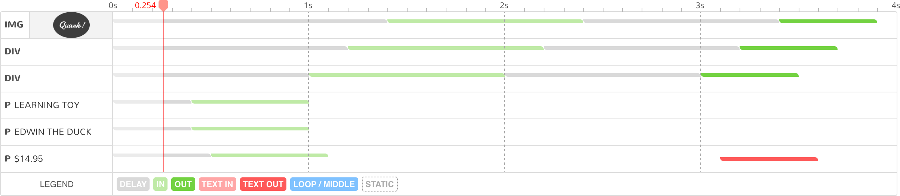

Thank you for purchasing this product. If you have any questions that are beyond the scope of this documentation, please feel free to contact us.
About the item
LayerSlider is a premium multi-purpose slider for creating image galleries, content sliders, and mind-blowing slideshows with must-see effects. It uses cutting edge technologies to provide the smoothest experience that’s possible, and it comes with more than 200 preset 2D and 3D slide transitions. It’s device friendly by supporting responsive mode, multiple layouts, touch gestures on mobile devices, and uses techniques like lazy load for optimal performance. You can add any content, including images, text, custom HTML, YouTube and Vimeo videos or HTML5 self-hosted multimedia contents. It’s also SEO friendly by allowing you to build semantic markup with custom attributes that search engines can index easily. LayerSlider comes with 18 built-in skins, and it has tons of options to entirely customize the appearance and behavior of your sliders at the smallest detail.
We are extremely grateful for the people working on the projects below. These guys are making our lives much easier, thus we can focus on building high quality products.
The most advanced web animation library to build spectacular transitions.
Including resource files
To get started you need to copy the necessary resource files to your assets folder and include them to your pages as illustrated in the example below. You need to insert these lines in the <head> section of your site.
Considering performance, you can put the script tags at the footer of your pages before the closing </body> tag as well.
Make sure to enter the corrent path for these files. The folder structure used by your site can differ from our example and you may need to change them accordingly.
jQuery and GreenSock are external libraries. Make sure to not insert a duplicate version if your site already uses them.
Creating the slider element
Next, you have to add an element for the slider within the <body> section of a page. The example code below won't do much, it's just a containment element. It will be filled with the actual slider contents later in this guide.
The initial size of the slider is defined in the style attribute. You can change those values to specify your preferred dimensions. Also, notice the id attribute. We will use its value (layerslider) to find and retrieve this element from the DOM later in this guide.
It is important to use the style attribute to define the slider dimensions. Using CSS will not allow the plugin to access the original values, only the browser computed ones. Alternatively, you can pass the width and height values in the slider configuration to avoid using inline styles.
Slider setup
You can initialize the slider plugin by calling the layerSlider( ) method on the target element. Since we used the ID layerslider in our sample markup, we find that element by jQuery and initialize LayerSlider on it. See the following example:
<script type="text/javascript">
// Running the code when the document is ready
$(document).ready(function(){
// Calling LayerSlider on the target element
$('#layerslider').layerSlider({
// Slider options will be added here
// later in this guide.
});
});
</script>
Initializing a slider
This code is usually placed before the closing </body> tag. Make sure to insert it after the included resource script files.
Remove the <script> wrapper element if you will use this code in an external JavaScript file.
Configuring the slider
LayerSlider has several options to customize your sliders. You can set these options by passing an object of key-value pairs with the options you would like to change. We've extended our previous example to intialize the slider with some custom options:
<script type="text/javascript">
// Running the code when the document is ready
$(document).ready(function(){
// Calling LayerSlider on the target element with custom slider options
$('#layerslider').layerSlider({
autoStart: false,
firstSlide: 2,
skin: 'borderlesslight',
// Please make sure to separate object
// properties (i.e. your options) with a comma.
});
});
</script>
Initializing the plugin with custom slider options
List of the available slider options
Layout
Properties
Values
Defaults
Description
width
<num>
–
The width of the slider canvas in pixels. Can also be set by using the style attribute on the slider container.
height
<num>
–
The height of the slider canvas in pixels. Can also be set by using the style attribute on the slider container.
The layout mode for sliders. See fullSizeMode and other options for additional settings and customization options. Read the Slider layouts section for more information.
responsiveUnder
<num>
–
Starts scaling down your sliders under the specified slider width value in full-width sliders. Omit this option to let the slider automatically scale itself.
fullSizeMode
'normal 'hero' 'fitheight'
'normal'
Select the sizing behavior of your full size sliders (e.g. hero scene).
fitScreenWidth
true false
true
If enabled, the slider will always have the same width as the viewport, even if a theme uses a boxed layout, unless you choose the "Fit to parent height" full size mode.
allowFullscreen
true false
true
Visitors can enter OS native full-screen mode when double clicking on the slider.
Other settings
maxRatio
<num>
–
The slider will not enlarge your layers above the target ratio. For example, the value 1 will keep your layers in their initial size, without any upscaling.
Move your slider to a different part of the page by providing a jQuery DOM manipulation method & selector for the target destination.
insertSelector
'<selector>'
–
clipSlideTransition
'disabled' 'enabled' 'x' 'y'
'disabled'
Choose on which axis (if any) you want to clip the overflowing content (i.e. that breaks outside of the slider bounds).
preventSliderClip
true false
true
Ensures that the site template cannot clip parts of the slider when used in a boxed layout.
Mobile
Properties
Values
Defaults
Description
hideOnMobile
true false
false
Hides the slider on mobile devices, including tablets.
hideUnder
<num>
–
Hides the slider when the viewport width goes under the specified value.
hideOver
<num>
–
Hides the slider when the viewport becomes wider than the specified value.
slideOnSwipe
true false
true
Ignore selected slide transitions and use sliding effects only when users are changing slides with a swipe on mobile devices.
optimizeForMobile
true false
true
Enable optimizations on mobile devices to avoid performance issues (e.g. fewer tiles in slide transitions, reducing performance-heavy effects with very similar results, etc).
Slideshow
Properties
Values
Defaults
Description
Slideshow behavior
firstSlide
<num> 'random'
1
The slider will start with the specified slide. You can also use the value "random".
autoStart
true false
true
Slideshow will automatically start after page load.
startInViewport
true false
true
The slider will start when it enters into the viewport.
pauseOnHover
'disabled' 'enabled' 'layers' 'looplayers'
'enabled'
Decide what should happen when you move your mouse cursor over the slider. Do nothing, pause slideshow only, pause slideshow and layer transitions (with loop optionally).
pauseLayers
true false
false
If you enable this option, layer transitions will not start playing until the slideshow is in a paused state.
hashChange
true false
false
Updates the hash in the page URL when changing slides based on the deeplinks you've set to your slides. This makes it possible to share URLs that will start the slider with the currently visible slide.
Slideshow navigation
keybNav
true false
true
You can navigate through slides with the left and right arrow keys.
touchNav
true false
true
Gesture-based navigation when swiping on touch-enabled devices.
Play by Scroll
playByScroll
true false
false
Play the slider by scrolling your mouse wheel.
playByScrollStart
true false
false
Instead of freezing the slider until visitors start scrolling, the slider will automatically start playback and will only pause at the first keyframe.
playByScrollSpeed
<num>
1
Set the playing speed of Play by Scroll.
playByScrollSkipSlideBreaks
true false
false
Enable this option to eliminate the stop between slide changes. Visitors would no longer need to scroll at the end of slides, instead the slider will only stop at the keyframes you specify.
Cycles
cycles
<num>
–
Number of cycles if slideshow is enabled.
forceCycles
true false
true
The slider will always stop at the given number of cycles, even if the slideshow restarts.
Other settings
twoWaySlideshow
true false
false
Slideshow can go backwards if someone switches to a previous slide.
shuffleSlideshow
true false
false
The slideshow will proceed in random order.
Appearance
Properties
Values
Defaults
Description
Slider appearance
skin
'<skin_name>'
'v6'
You can change the skin of the slider. The 'noskin' skin is a border- and buttonless skin. Custom skins can also be specified.
skinsPath
'<skins folder path>'
'/layerslider/skins/'
You can change the default path of the skins folder. Make sure to append a trailing slash at the end of your path.
sliderFadeInDuration
<num>
350
The duration of the fade transition (in ms) when the slider is showing up for the first time on page load.
Slider global background
globalBGColor
'<css value>'
–
Global background color of the slider. Slides with non-transparent background will cover this one. You can use all CSS methods such as HEX or RGB(A) values.
globalBGImage
'<url>'
–
Global background image of the slider. Slides with non-transparent backgrounds will cover it. This image will not scale in responsive mode.
globalBGRepeat
'no-repeat' 'repeat' 'repeat-x' 'repeat-y'
'no-repeat'
Global background image repeat.
globalBGAttachment
'scroll' 'fixed'
'scroll'
Choose between a scrollable or fixed global background image.
globalBGPosition
'<css value>'
'50% 50%'
Global background image position of the slider. The first value is the horizontal position and the second value is the vertical.
globalBGSize
'auto' 'cover' 'contain' '<css value>'
'auto'
Global background size of the slider. You can set the size in pixels, percentages, or constants: auto | cover | contain
Navigation Area
Properties
Values
Defaults
Description
Show navigation buttons
navPrevNext
true false
true
Disabling this option will hide the Prev and Next buttons.
navStartStop
true false
true
Disabling this option will hide the Start and Stop buttons.
navButtons
true false
true
Disabling this option will hide slide navigation buttons or thumbnails.
Show buttons on hover
hoverPrevNext
true false
true
Show the buttons only when someone moves the mouse cursor over the slider. This option depends on the previous setting.
hoverBottomNav
true false
false
Slide navigation buttons (including thumbnails) will be shown on mouse hover only.
Slideshow timers
showBarTimer
true false
false
Show the bar timer to indicate slideshow progression.
showCircleTimer
true false
true
Use circle timer to indicate slideshow progression.
showSlideBarTimer
true false
false
You can grab the slidebar timer playhead and seek the whole slide real-time like a movie.
Thumbnail Navigation
Properties
Values
Defaults
Description
Appearance
thumbnailNavigation
'disabled' 'hover' 'always'
'hover'
Type of the thumbnail navigation. Make sure to enable navButtons to work properly.
tnContainerWidth
'<percentage>%'
'60%'
The width of the thumbnail container relative to the slider size.
Thumbnail dimensions
tnWidth
<num>
100
The width of the thumbnails in pixels.
tnHeight
<num>
60
The height of the thumbnails in pixels.
Thumbnail appearance
tnActiveOpacity
0 - 100
35
Opacity in percents of thumbnail of the active slide.
tnInactiveOpacity
0 - 100
100
Opacity in percents of thumbnails of the inactive slides.
Videos
Properties
Values
Defaults
Description
autoPlayVideos
true false
true
Video & audio will be automatically started on the active slide.
autoPauseSlideshow
'auto' true false
'auto'
The slideshow can temporally be paused while videos are playing. You can choose to permanently stop the pause until manual restarting.
The automatically fetched preview image quality for YouTube videos when you do not set your own. Please note, some videos do not have HD previews, and you may need to choose a lower quality.
YourLogo
Properties
Values
Defaults
Description
yourLogo
'image_url' false
false
A fixed image layer can be shown above the slider that remains still throughout the whole slider. Can be used to display logos or watermarks.
yourLogoStyle
'<css properties>'
'left: -10px; top: -10px;'
CSS properties to control the image placement and appearance.
yourLogoLink
'<url>' false
false
Enter a URL to link the YourLogo image.
yourLogoTarget
'self' '_blank'
'_blank'
Choose whether you want to open the link in the current or on a new tab.
Default Options
The following settings are inheritable by certain options and can be set globally if they choose to use inheritance.
Properties
Values
Defaults
Description
Slide background defaults
slideBGSize
'auto' 'cover' 'contain'
'cover'
The default slide background image size. This will be used as a default on all slides, unless you choose to explicitly override it on a per slide basis.
slideBGPosition
'<css value>'
'50% 50%'
The default slide background image position. This will be used as a default on all slides, unless you choose the explicitly override it on a per slide basis.
Parallax defaults
parallaxSensitivity
<num>
10
Increase or decrease the sensitivity of parallax content when moving your mouse cursor or tilting your mobile device.
parallaxCenterLayers
'center', 'top'
'center'
Choose a center point for parallax content where all layers will be aligned perfectly according to their original position.
parallaxCenterDegree
<num>
40
Provide a comfortable holding position (in degrees) for mobile devices, which should be the center point for parallax content where all layers should align perfectly.
parallaxScrollReverse
true false
false
Your parallax layers will move to the opposite direction when scrolling the page.
Misc
preferBlendMode
true false
false
Enable this option to avoid blend mode issues with slide transitions. Due to technical limitations, this will also clip your slide transitions regardless of your settings.
forceLayersOutDuration
<num>
750
The animation speed in milliseconds when the slider forces remaining layers out of scene before swapping slides.
Misc
Properties
Values
Defaults
Description
allowRestartOnResize
true false
false
Certain transformation and transition options cannot be updated on the fly when the browser size or device orientation changes. By enabling, the slider will automatically detect such situations and will restart the current slider to preserve its appearance.
useSrcset
true false
true
The srcset attribute allows loading dynamically scaled images based on screen resolution. It can save bandwidth and allow using retina-ready images on high resolution devices. If not configured correctly, srcsets might also cause blurry images in some edge cases.
Slider layouts
Settings
Result
Fixed size
The slider will *not* be resized at all in any case.
Responsive
The slider will automatically use the available space to fill its container by proportionally scaling itself up or down based on the parent container width. Use the CSS min-width or max-width properties on the slider container to set an upper or lower limit.
Full width
Edge to edge full width mode. The slider can break out from its containment element if your site uses a boxed layout. Your layers will be centered within the slider without upscaling, empty space at the sides of the slider will be covered by the slider/slide background. Downscaling starts at the initial slider width by default, but your can override it with the responsiveUnder option.
Full size
Normal: Your slider will always be the same size as the browser viewport, even after resizing. Slider content will be automatically upscaled or downscaled to fit perfectly to the available space on the site. Sliders can break out from their bounding elements if not placed correctly.
Hero scene: Hero scene sliders act similarly as normal full size ones, except they will reduce their height by their scrollTop values. They should be used at the top of your page. They are ideal to perfectly fill the browser window when scrolled to the top, even if page headers and menu bars would otherwise push them down a bit.
Fit to height: Follows the height of the parent element and resizes the slider proportionally to fit its bounding element.
Popup
This layout mode is enabled by an external plugin. Read the Using Popups section to learn more.
Scaling your layers might be affected by the maxRatio option if you have set it.
Slidebar timer
This is an interactive timer, which you can grab and seek through the slide like it was a movie. You can use the showSlideBarTimer slider option to automatically add it after a slider.
However, you can also specify your own element used for the timer. Make sure to add an ID to your slider, then apply the data-slidebar-for attribute on your custom element and provide the same ID as a value.
<!-- Your slider -->
<div id="layerslider" style="width: 800px; height: 400px;">
<!-- ... -->
</div>
<!-- The custom slidebar element -->
<div data-slidebar-for="layerslider"></div>
Adding a slider with a custom slidebar timer
Slider plugins
LayerSlider has several extra features implemented through external plugins. Some notable examples would be Debug mode, Timeline, Origami and the Popup plugin. Plugins are not part of the main slider Javascript files due to performance considerations, they are stored in external JS and CSS files.
Every plugin has a dedicated folder in the LayerSlider plugins directory. When you want to load plugins, you will need register it in the slider init code by passing an array with the folder names for the plugins slider option. You will also need to include their Javascript and CSS resource files on your page.
The example below demonstrates how to load the Origami plugin. See the highlighted lines. Naturally, you can load multiple plugins and use them all in combination.
<!-- Load the Origami plugin resource files -->
<link href="/layerslider/plugins/origami/layerslider.origami.css" rel="stylesheet" type="text/css">
<script src="/layerslider/plugins/origami/layerslider.origami.js" type="text/javascript"></script>
<!-- Initialize the slider with the Origami plugin -->
<script type="text/javascript">
$(document).ready(function(){
$('#layerslider').layerSlider({
skin: 'borderlesslight',
plugins: ['origami']
});
});
</script>
Example of loading the plugin files and initializing a slider with the Origami plugin
Creating slides
You can create slides by adding a <div> element into the slider with the class name ls-slide as can be seen in the example below. The highlighted lines are indicating new additions to our previous examples.
You can configure slide-related settings by entering them in an attribute called data-ls on the slide element. This makes possible to change the timings, transition options and other common settings. Notice the changes in the highlighted lines:
Slide timings are calculated automatically by default. You don't have to bother specifying them, unless you want to use a custom value. If you do want to use a custom value, the option named duration can be used to change the length of a slide. This value is specified in milliseconds, so the value 4000 used in the previous example means 4 seconds.
Later in this guide we will add layers and other slide contents having their own timing settings. Keep in mind that the duration setting will always overrule other timings and the slider won't wait for other elements if they are exceeding the time interval set with duration.
Slide Transitions
Transitions can be defined in the same way we did in the previous example with duration. You can use 2D and 3D transitions separately or together depending on your needs with the option names transition2d and transition3d.
There are more than 200 2D & 3D preset transitions, so we have created a transition galley that you can view below in this chapter. The option values are the transition IDs that you can see in the transition gallery. The selected transition will be applied when you're arriving to a slide. For example, when the slider switches from the first slide to the second, you need to apply the selected transition on the second slide.
You can choose multiple transitions by entering a comma separated list. In that case the slider will use them in random order. Alternatively, you can use the value all to randomly use all the available pre-defined transitions. If you do not specify any transitions, the slider will use a simple sliding effect.
Since web standards don't provide a way to capture your slides, we are using the slide background image in transitions. It means that in many cases you need to add slide backgrounds in order to have a transition.
We've updated our previous exmaple. See the changed parts in the higlighted lines.
The size of the slide background image. Use 'inherit' if you want to set it globally from the slider settings.
bgposition
inherit <css value>
inherit
The position of the slide background image. Use 'inherit' if you want to set it globally from the slider settings.
bgcolor
<css value>
–
The slide background color. You can use color names, hexadecimal, RGB or RGBA values.
Slide transition options
duration
<num>
–
The slide length in milliseconds. The slider will automatically determine the slide duration if you omit this option. Otherwise the slide will stay visible for the amount of time specified here. This value is in millisecs, so the value 1000 means 1 second.
transition2d
<transition ids>
–
A comma separated list of 2D transition IDs. See the Transition Gallery section for more details.
transition3d
<transition ids>
–
A comma separated list of 3D transition IDs. See the Transition Gallery section for more details.
customtransition2d
<transition ids>
–
A comma separated list of custom 2D transition IDs. See the Custom slide transitions section for more details.
customtransition3d
<transition ids>
–
A comma separated list of custom 3D transition IDs. See the Custom slide transitions section for more details.
transitionduration
<num>
–
We've made our pre-defined slide transitions with special care to fit in most use cases. However, if you would like to increase or decrease the speed of these transitions, you can override their timing here by providing your own transition length in milliseconds. (1 second = 1000 milliseconds)
timeshift
<num>
0
You can shift the starting point of the slide animation timeline, so layers can animate in an earlier time after a slide change. This value is in milliseconds. A second is 1000 milliseconds. You can only use a negative value.
overflow
true false
false
By default the slider clips the layers outside of its bounds. Enable this option to allow overflowing content.
Other options
deeplink
<deeplink name>
–
You can specify a slide alias name which you can use in your URLs with a hash mark, so LayerSlider will start with the corresponding slide. See the Linking slides section for more information.
globalhover
true false
false
By turning this option on, all layers will trigger their Hover Transitions at the same time when you hover over the slider with your mouse cursor. It’s useful to create spectacular effects that involve multiple layer transitions and activate on hovering over the slider instead of individual layers.
Ken Burns Effect
kenburnszoom
in out
–
Choose the type of the Ken Burns effect you would like to apply on the slide (if any).
kenburnsscale
<num>
1.2
Increase or decrease the size of the slide background image in the Ken Burns effect. The default value is 1, the value 2 will double the image, while 0.5 results half the size. Negative values will flip the image.
kenburnsrotate
<num>
–
The amount of rotation (if any) in degrees used in the Ken Burns effect. Negative values are allowed for counterclockwise rotation.
Parallax Defaults
parallaxtype
2d 3d
2d
The default value for parallax layers on this slide, which they will inherit, unless you set it otherwise on the affected layers.
parallaxevent
cursor scroll
cursor
You can trigger the parallax effect by either scrolling the page, or by moving your mouse cursor / tilting your mobile device. This is the default value on the slide, which parallax layers will inherit, unless you set it otherwise directly on them.
parallaxaxis
none both x y
both
Choose on which axes parallax layers should move. This is the default value on the slide, which parallax layers will inherit, unless you set it otherwise directly on them.
parallaxtransformorigin
<css value>
50% 50% 0
Sets a point on canvas from which transformations are calculated. For example, a layer may rotate around its center axis or a completely custom point, such as one of its corners. The three values represent the X, Y and Z axes in 3D space. Apart from the pixel and percentage values, you can also use the following constants: top, right, bottom, left, center.
parallaxdurationmove
<num>
1500
Controls the speed of animating layers when you move your mouse cursor or tilt your mobile device. This is the default value on the slide, which parallax layers will inherit, unless you set it otherwise directly on them.
parallaxdurationleave
<num>
1200
Controls how quickly your layers revert to their original position when you move your mouse cursor outside of a parallax slider. This value is in milliseconds. 1 second = 1000 milliseconds. This is the default value on the slide, which parallax layers will inherit, unless you set it otherwise directly on them.
parallaxdistance
<num>
10
Increase or decrease the amount of layer movement when moving your mouse cursor or tilting on a mobile device. This is the default value on the slide, which parallax layers will inherit, unless you set it otherwise directly on them.
parallaxrotate
<num>
10
Increase or decrease the amount of layer rotation in the 3D space when moving your mouse cursor or tilting on a mobile device. This is the default value on the slide, which parallax layers will inherit, unless you set it otherwise directly on them.
parallaxtransformperspective
<num>
500
Changes the perspective of layers in the 3D space. This is the default value on the slide, which parallax layers will inherit, unless you set it otherwise directly on them.
Adding slide background & thumbnail
Adding a slide background image
The background image of the currently active slide is used to fill the slider. Add a standard <img> element into your slides with the ls-bg class for setting a slide background. Different fill modes and other relevans settings are available in the slide options section.
Since web standards don't provide a way to capture your slides, we are using the slide background image in transitions. It means that in many cases you need to add slide backgrounds in order to have transitions when the slider changes slides.
<div id="layerslider" style="width: 800px; height: 400px;">
<!-- First slide -->
<div class="ls-slide" data-ls="duration: 4000; transition2d: 2,7,9;">
<!-- Slide background image of the first slide -->
<img src="../img/sample_slide_1.png" class="ls-bg" alt="Slide background">
</div>
<!-- Second slide -->
<div class="ls-slide" data-ls="duration: 4000; transition3d: all;">
<!-- Slide background image of the second slide -->
<img src="../img/sample_slide_2.jpg" class="ls-bg" alt="Slide background">
</div>
</div>
Adding a slide background image
Adding a slide thumbnail
The slider can show a preview image of slides if you are using thumbnail navigation. You can specify your preferred thumbnail image by adding an <img> element with the ls-tn class in the same manner as we did with slide backgrounds above. The slider will use the slide background if you don't specify a thumbnail image.
<div id="layerslider" style="width: 800px; height: 400px;">
<!-- First slide -->
<div class="ls-slide" data-ls="duration: 4000; transition2d: 2,7,9;">
<!-- Slide background image of the first slide -->
<img src="../img/sample_slide_1.png" class="ls-bg" alt="Slide background">
<!-- Slide thumbnail image of the first slide -->
<img src="..." class="ls-tn" alt="Slide thumbnail">
</div>
<!-- Second slide -->
<div class="ls-slide" data-ls="duration: 4000; transition3d: all;">
<!-- Slide background image of the second slide -->
<img src="../img/sample_slide_2.jpg" class="ls-bg" alt="Slide background">
<!-- Slide thumbnail image of the second slide -->
<img src="..." class="ls-tn" alt="Slide thumbnail">
</div>
</div>
Adding a slide thumbnail
Linking slides
You can link the entire surface of slides by adding an HTML <a> element in slides with the ls-link class name. We've linked the first slide in our example below. The higlight indicates the changes.
You can choose whether the slide link should be on top or underneath your layers. In case of the former option, add the ls-link-on-top class to the slide link anchor element. Otherwise, the link will be clickable only at empty spaces where the slide background is visible. This would enable you to link both slides and layers independently from each other.
<div id="layerslider" style="width: 800px; height: 400px;">
<!-- First slide -->
<div class="ls-slide" data-ls="duration: 4000; transition2d: 2,7,9;">
<!-- Slide background image of the first slide -->
<img src="../img/sample_slide_1.png" class="ls-bg" alt="Slide background">
<!-- Slide thumbnail image of the first slide -->
<img src="..." class="ls-tn" alt="Slide thumbnail">
<!-- A link to example.com -->
<a href="http://example.com/" class="ls-link ls-link-on-top"></a>
</div>
<!-- Second slide -->
<div class="ls-slide" data-ls="duration: 4000; transition3d: all;">
<!-- Slide background image of the second slide -->
<img src="../img/sample_slide_2.jpg" class="ls-bg" alt="Slide background">
<!-- Slide thumbnail image of the second slide -->
<img src="..." class="ls-tn" alt="Slide thumbnail">
</div>
</div>
Linking the whole slide
Smart links
Smart links can control the slideshow and slider navigation with pre-defined special links. Just enter one of the following to the href attribute of your links, then it will automatically perform the corresponding action.
Link
Action
#start
Resumes the slideshow from its paused state.
#stop
Stops the slideshow, so the slider will not navigate away from the current slide.
#prev
Goes back to the previous slide.
#next
Advances to the next slide.
#replay
Restarts the slide, replays all layer transitions from the beginning.
#reverse
Play the slide and all transitions backwards, then pause at the beginning of the slide.
#reverse-replay
Play the slide and all transitions backwards, then continue replaying the slide normally.
Jumps to the specified slide. Replace the {n} part with a slide number. For example, #3 will switch to the third slide. Please do not include spaces between the hash mark and your number.
Deeplinking slides
Deeplinking can be used to provide a special link to your customers, which will start the slider with a certain slide (instead of the first one) when they arrive to your page. Set a deeplink name for a slide, then append a hash tag followed by the deeplink name to your URL.
It's important to note that deeplinking only control the starting slide when someone arrives to your site. Use smart links described above to build a back and forth type of navigation between slides.
The following example will start the slider with the second slide if we are using the slide deeplink name cakes in the URL example.com/page/#cakes. See the changes in code marked with the highlight.
<div id="layerslider" style="width: 800px; height: 400px;">
<!-- First slide -->
<div class="ls-slide" data-ls="duration: 4000; transition2d: 2,7,9;">
<!-- Slide background image of the first slide -->
<img src="../img/sample_slide_1.png" class="ls-bg" alt="Slide background">
<!-- Slide thumbnail image of the first slide -->
<img src="..." class="ls-tn" alt="Slide thumbnail">
<!-- A link to example.com -->
<a href="http://example.com/" class="ls-link"></a>
</div>
<!-- Second slide -->
<div class="ls-slide" data-ls="duration: 4000; transition3d: all; deeplink: cakes;">
<!-- Slide background image of the second slide -->
<img src="../img/sample_slide_2.jpg" class="ls-bg" alt="Slide background">
<!-- Slide thumbnail image of the second slide -->
<img src="..." class="ls-tn" alt="Slide thumbnail">
</div>
</div>
Deep-linking a slide
List of transitions
These are all of the available pre-defined 2D / 3D transitions that you can use. Remember, you need to specify the ID of your selected transitions instead of their names. Move your mouse over the transition names to preview them.
2D slide transitions
ID
Transition name
ID
Transition name
3D slide transitions
ID
Transition name
ID
Transition name
Special effects
Special effects are like regular slide transitions and they work in the same way. You can set them on each slide individually. Mixing them with other transitions on other slides is perfectly fine. In case of 3D special effects, selecting additional 2D transitions can ensure backward compatibility for older browsers.
Origami
Share your gorgeous photos with the world or your loved ones in a truly inspirational way and create sliders with stunning effects with Origami.
Origami is a form of 3D transition and it works in the same way as regular slide transitions do. As mentioned above, you can apply Origami to each slide individually, so mixing it with other transitions on other slides is perfectly fine. Specifying additional 2D transitions can ensure backward compatibility for older browsers. Besides Internet Explorer, Origami works in all modern browsers (including Edge).
To use Origami, you first need to load the the Origami plugin described in this section. Then, apply the transitionorigami: true; option to the slides where you want to use the effect. Don't forget, Origami works just like any other transition. Revisiting the Slide Transitions and List of slide options sections can be really helpful. For clarity, you can see a full example below. The highlighted lines are showing changes related to Origami.
All the available preset transitions are stored in the layerslider.transitions.js file. You can modify this file to add your own transitions or change the default ones. It stores a complex JavasScript object, thus modifying that file is not recommended for users without web development experience. Unfortunately, this documentation cannot cover such topics, but you can find great guides on the internet.
Please note, we have more than 200 slide transitions, which takes advantage of every capability of the plugin. You will most likely find similar transitions within the pre-defined ones that you have in mind.
See the source
As mentioned previously, we are assuming your have programming skills since it is needed for making custom transitions. See the source code of the layerslider.transitions.js file. This file may be compressed, so make sure to open the one from the sources folder. It should be pretty straightforward for people with web development experience, just observe which properties we're using in the pre-defined transitions.
It's also possible to load custom transitions externally. Since you may override the layer.transititons.js file when updating the plugin, it is recommended to place your code in another file and load it independetly from the plugin. This file should be essentially the same as the original, but with your own transitions. The only adjustment you need to make is to use the layerSliderCustomTransitions variable name.
Adding a layer
Layers are the contents of slides. Unlike more conventional slider plugins, you can use as many layers as you want in a slide. They can be images, text, custom HTML, video and audio contents.
You can add layers by appending standard HTML elements into your slides with the ls-layer class name. To make things easy, you can also use the ls-l class name. For image layers, use the <img> element. For text/HTML layers use the appropriate element like <div>, <p>, <h1>, <h2>, <h3> etc.
We've extended our previous example with an image and text layer. See the highlighted lines.
<div id="layerslider" style="width: 800px; height: 400px;">
<!-- First slide -->
<div class="ls-slide" data-ls="duration: 4000; transition2d: 2,7,9;">
<!-- Slide background image of the first slide -->
<img src="../img/sample_slide_1.png" class="ls-bg" alt="Slide background">
<!-- Slide thumbnail image of the first slide -->
<img src="..." class="ls-tn" alt="Slide thumbnail">
<!-- A link to example.com -->
<a href="http://example.com/" class="ls-link"></a>
<!-- Image layer on first slide -->
<img src="..." class="ls-layer">
</div>
<!-- Second slide -->
<div class="ls-slide" data-ls="duration: 4000; transition3d: all; deeplink: cakes;">
<!-- Slide background image of the second slide -->
<img src="../img/sample_slide_2.jpg" class="ls-bg" alt="Slide background">
<!-- Slide thumbnail image of the second slide -->
<img src="..." class="ls-tn" alt="Slide thumbnail">
<!-- Text layer on second slide -->
<h1 class="ls-layer">I'm a text layer!</h1>
</div>
</div>
Adding different types of layers into slides
Positioning layers
Layers are regular HTML elements positioned with the CSS top and left properties. However, LayerSlider expect you to set these CSS properties on the element itself with the inline style attribute. This is required to avoid relying on the browser's computed values. Otherwise LayerSlider couldn't read and process values like percents properly.
Please note, you can't use other methods for positioning. LayerSlider will ignore setting the bottom or right properties. Using top: 100% / left: 100% will position the layer to the slider bottom / right. Margins can be used to adjust layer positions by using the style attribute. Read the additional information after the example code to learn more how to handle special cases.
<div id="layerslider" style="width: 800px; height: 400px;">
<!-- First slide -->
<div class="ls-slide" data-ls="duration: 4000; transition2d: 2,7,9;">
<!-- Slide background image of the first slide -->
<img src="../img/sample_slide_1.png" class="ls-bg" alt="Slide background">
<!-- Slide thumbnail image of the first slide -->
<img src="..." class="ls-tn" alt="Slide thumbnail">
<!-- A link to example.com -->
<a href="http://example.com/" class="ls-link"></a>
<!-- Image layer on first slide -->
<img src="..." class="ls-layer" style="top: 10px; left: 10x;">
</div>
<!-- Second slide -->
<div class="ls-slide" data-ls="duration: 4000; transition3d: all; deeplink: cakes;">
<!-- Slide background image of the second slide -->
<img src="../img/sample_slide_2.jpg" class="ls-bg" alt="Slide background">
<!-- Slide thumbnail image of the second slide -->
<img src="..." class="ls-tn" alt="Slide thumbnail">
<!-- Text layer on second slide -->
<h1 class="ls-layer" style="top: 50%; left: 50%;">I'm a text layer!</h1>
</div>
</div>
Positioning layers with using the style attribute
Additional notes
Notice the second layer with using percents. Percentage values in LayerSlider works a bit differently than web standards. LayerSlider will place the center of layers to the given position instead of their sides. This makes easy to position layers exactly to the center by setting the values 50% 50%. The only exception is when you use 0% or 100%. These will position the layer exactly to the sides as you would expect.
Sizing and using word wrap on text/HTML layers
By default, CSS uses auto-expanding width for positioned elements. This can lead to strange behavior when animating text/HTML layers, so LayerSlider uses the CSS white-space: nowrap; by default on your layers to avoid strange issues. As a consequence, you need to override this CSS property if you want to use multi-line text contents and set custom dimensions to the affected layers.
Styling layers
Styling layers can be done with standard CSS code. Besides positioning mentioned above, there is no restriction in what CSS properties you can use or how to use them. Using the style attribute was only important to access the original position values instead of the browser computed ones. The rest of your styling rules can be loaded from external CSS files or used whichever method you see fit.
Later in this guide you will learn how layer transition are animating regular CSS values back and forth. Keep in mind that LayerSlider watches the element styles and some special values will be used to influence transitions.
For example, a simple fade transition would make a layer 100% visible at the end of the animations. If you use opacity: 0.5;, the transition will only animate to this semi-transparent state.
Linking layers
You can link layers by wrapping them with a regular HTML <a> element. There is no special rules involved, you can also apply custom attributes on your link.
Smart links can control the slideshow and slider navigation with pre-defined special links. Just enter one of the following to the href attribute of your links, then it will automatically perform the corresponding action.
Link
Action
#start
Resumes the slideshow from its paused state.
#stop
Stops the slideshow, so the slider will not navigate away from the current slide.
#prev
Goes back to the previous slide.
#next
Advances to the next slide.
#replay
Restarts the slide, replays all layer transitions from the beginning.
#reverse
Play the slide and all transitions backwards, then pause at the beginning of the slide.
#reverse-replay
Play the slide and all transitions backwards, then continue replaying the slide normally.
Jumps to the specified slide. Replace the {n} part with a slide number. For example, #3 will switch to the third slide. Please do not include spaces between the hash mark and your number.
Embedding video/audio
Embedding YouTube and Vimeo videos
You can include YouTube and Vimeo videos in slides by inserting their embed code into a <div> layer. The embed code can be found on the corresponding video page on YouTube/Vimeo. LayerSlider will follow the dimensions specified in the embed code, thus you can also set them there. Alternatively, you can override it by using the style attribute like with other layers.
Embedding an (optionally self-hosted) HTML5 video/audio
Embedding self-hosted media involves the HTML5 <video> or audio element. You can find a detailed guide on this MDN page. The principal is the same described above. Here is a modified example:
You can use the following options with the data-ls attribute on multimedia layers in the same way as we did before.
Option
Values
Defaults
Description
autoplay
inherit true false
inherit
Automatically starts playing the video/audio when navigating to the slide. Can be inherited from the global slider settings.
showinfo
true false
true
Shows or hides additional media information, such as the media title or video recommendations on YouTube and Vimeo.
controls
true false
true
Shows or hides the media player controls like the play/pause buttons.
poster
<url>
–
The URL for a custom poster image used for the video.
fillmode
contain cover
cover
If the media aspect ratio differs from the media player, choose cover to fill the entire surface of the player by zooming in.
volume
0-100
–
Specify a value between 0 and 100 if you want to override the default media volume.
backgroundvideo
true false
false
Forces the layer to act like the slide background by covering the whole slider and ignoring some transitions. Please make sure to provide your own poster image with the option above, so the slider can display it immediately on page load.
overlay
<url>
–
Provide a URL to cover your videos with an overlay image. Use this if you want to have dotted, striped or other popular effects on your videos.
Device support
The built-in layout options and responsive mode should cover most use cases to build flexible sliders that looks great on every device. However, it's also possible to dynamically hide and show up layers based on the viewing device to built alternative layouts for the same slider. To do that, you just need to add special classes on your layers.
Class name
Role
Criteria
ls-hide-desktop
Hides a layer on desktop computers.
Screen width > 1024px
ls-hide-tablet
Hides a layer on tablets.
Screen width >= 768px and <= 1024px
ls-hide-phone
Hides a layer on phones.
Screen with <= 767px
Layer transitions
The transition options can be set with the data-ls attribute in the same way as we used it to configure slides. There are many different type of transitions, each having a handful of options that can be used in the data-ls attribute. You can combine these options, making unique transitions in every way.
Keep in mind that LayerSlider can detect certain styling rules on layers, which might be used to modify layer transitions accordingly. Read the Styling layers section for more information and examples.
The following are the initial options from which a layer animates toward the appropriate values set with regular CSS when it enters into the slider canvas. You need to use either Opening Transition or Opening Text Transition in order to make a layer visible.
Option
Example values
Defaults
Description
transitionin
true false
true
Explicitly enables or disables using the Opening Transition.
offsetxin
<num> left right 100lw -100lw 50sw -50sw random(-100,100)
0
Shifts the layer starting position from its original on the horizontal axis with the given number of pixels. Use negative values for the opposite direction. The values 'left' or 'right' position the layer out the staging area, so it enters the scene from either side when animating to its destination location. See also the Custom units section.
offsetyin
<num> top bottom 100lh -100lh 50sh -50sh random(-100,100)
0
Shifts the layer starting position from its original on the vertical axis with the given number of pixels. Use negative values for the opposite direction. The values 'top' or 'bottom' position the layer out the staging area, so it enters the scene from either vertical side when animating to its destination location. See also the Custom units section.
durationin
<num>
1000
The length of the transition in milliseconds when the layer enters the scene. A second equals to 1000 milliseconds.
startatin
<num>
0
Delays the transition with the given amount of milliseconds before the layer enters the scene. A second equals to 1000 milliseconds.
The timing function of the animation. With this function you can manipulate the movement of the animated object. Please click on the link to open easings.net for more information and real-time examples.
fadein
true false
true
Fade the layer during the transition.
rotatein
<num> random(-45,45)
0
Rotates the layer by the given number of degrees. Negative values are allowed for counterclockwise rotation.
rotatexin
<num> random(-45,45)
0
Rotates the layer along the X (horizontal) axis by the given number of degrees. Negative values are allowed for reverse direction.
rotateyin
<num> random(-45,45)
0
Rotates the layer along the Y (vertical) axis by the given number of degrees. Negative values are allowed for reverse direction.
skewxin
<num> random(-45,45)
0
Skews the layer along the X (horizontal) by the given number of degrees. Negative values are allowed for reverse direction.
skewyin
<num> random(-45,45)
0
Skews the layer along the Y (vertical) by the given number of degrees. Negative values are allowed for reverse direction.
scalexin
<num> random(2,4)
1
Scales the layer along the X (horizontal) axis by the specified vector. Use the value 1 for the original size. The value 2 will double, while 0.5 shrinks the layer compared to its original size.
scaleyin
<num> random(2,4)
1
Scales the layer along the Y (vertical) axis by the specified vector. Use the value 1 for the original size. The value 2 will double, while 0.5 shrinks the layer compared to its original size.
transformoriginin
<css value>
50% 50% 0
Sets a point on canvas from which transformations are calculated. For example, a layer may rotate around its center axis or a completely custom point, such as one of its corners. The three values represent the X, Y and Z axes in 3D space. Apart from the pixel and percentage values, you can also use the following constants: top, right, bottom, left, center, slidercenter, slidermiddle, slidertop, sliderright, sliderbottom, sliderleft.
clipin
0 0 100% 0 0 0 0 100% 100% 0 0 0 0 100% 0 0
–
Clips (cuts off) the sides of the layer by the given amount specified in pixels or percentages. The 4 value in order: top, right, bottom and the left side of the layer.
bgcolorin
<css color>
–
The background color of your layer. You can use color names, hexadecimal, RGB or RGBA values. Example: #FFF
colorin
<css color>
–
The color of your text. You can use color names, hexadecimal, RGB or RGBA values. Example: #333
radiusin
<num>
–
Sets the radius of rounded corners. Example: 5px
widthin
<num>
–
The initial width of this layer from which it will be animated to its proper size during the transition.
heightin
<num>
–
The initial height of this layer from which it will be animated to its proper size during the transition.
Filters provide effects like blurring or color shifting your layers. See the example values or click here to learn more about using filters.
transformperspectivein
<num>
500
Changes the perspective of this layer in the 3D space.
Opening Text Transition
The following options specify the initial state of each text fragments before they start animating toward the joint whole word. You need to use either Opening Transition or Opening Text Transition in order to make a layer visible.
Option
Example values
Defaults
Description
texttransitionin
true false
–
Explicitly enables or disables using the Opening Text Transition.
Select how your text should be split and animated.
textshiftin
<num>
50
Delays the transition of each text nodes relative to each other with the given amount of milliseconds. A second equals to 1000 milliseconds.
textoffsetxin
<num> left right 100lw -100lw 50sw -50sw 50|-50 random(-100,100)
0
Shifts the starting position of text nodes from their original on the horizontal axis with the given number of pixels. Use negative values for the opposite direction. The values 'left' or 'right' position text nodes out the staging area, so they enter the scene from either side when animating to their destination location. By listing multiple values separated with a | character, the slider will use different transition variations on each text node by cycling between the provided values. See also the Custom units section.
textoffsetyin
<num> top bottom 100lh -100lh 50sh -50sh 50|-50 random(-100,100)
0
Shifts the starting position of text nodes from their original on the vertical axis with the given number of pixels. Use negative values for the opposite direction. The values 'top' or 'bottom' position text nodes out the staging area, so they enter the scene from either vertical side when animating to their destination location. By listing multiple values separated with a | character, the slider will use different transition variations on each text node by cycling between the provided values. See also the Custom units section.
textdurationin
<num>
1000
The transition length in milliseconds of the individual text fragments. A second equals to 1000 milliseconds.
The timing function of the animation. With this function you can manipulate the movement of animated text fragments. Please click on the link to open easings.net for more information and real-time examples.
textfadein
true false
true
Fade the text fragments during their transition.
textrotatein
<num> 30|-30 random(-45,45)
0
Rotates text fragments clockwise by the given number of degrees. Negative values are allowed for counterclockwise rotation. By listing multiple values separated with a | character, the slider will use different transition variations on each text node by cycling between the provided values.
textrotatexin
<num> 30|-30 random(-45,45)
0
Rotates text fragments along the X (horizontal) axis by the given number of degrees. Negative values are allowed for reverse direction. By listing multiple values separated with a | character, the slider will use different transition variations on each text node by cycling between the provided values.
textrotateyin
<num> 30|-30 random(-45,45)
0
Rotates text fragments along the Y (vertical) axis by the given number of degrees. Negative values are allowed for reverse direction. By listing multiple values separated with a | character, the slider will use different transition variations on each text node by cycling between the provided values.
textscalexin
<num> 30|-30 random(2,4)
1
Scales text fragments along the X (horizontal) axis by the specified vector. Use the value 1 for the original size. The value 2 will double, while 0.5 shrinks text fragments compared to their original size. By listing multiple values separated with a | character, the slider will use different transition variations on each text node by cycling between the provided values.
textscaleyin
<num> 30|-30 random(2,4)
1
Scales text fragments along the Y (vertical) axis by the specified vector. Use the value 1 for the original size. The value 2 will double, while 0.5 shrinks text fragments compared to their original size. By listing multiple values separated with a | character, the slider will use different transition variations on each text node by cycling between the provided values.
textskewxin
<num> 30|-30 random(-45,45)
0
Skews text fragments along the X (horizontal) axis by the given number of degrees. Negative values are allowed for reverse direction. By listing multiple values separated with a | character, the slider will use different transition variations on each text node by cycling between the provided values.
textskewyin
<num> 30|-30 random(-45,45)
0
Skews text fragments along the Y (vertical) axis by the given number of degrees. Negative values are allowed for reverse direction. By listing multiple values separated with a | character, the slider will use different transition variations on each text node by cycling between the provided values.
texttransformoriginin
50% 50% 0|100% 100% 0
50% 50% 0
Sets a point on canvas from which transformations are calculated. For example, a layer may rotate around its center axis or a completely custom point, such as one of its corners. The three values represent the X, Y and Z axes in 3D space. Apart from the pixel and percentage values, you can also use the following constants: top, right, bottom, left, center, slidercenter, slidermiddle, slidertop, sliderright, sliderbottom, sliderleft.
texttransformperspectivein
<num>
500
Changes the perspective of this layer in the 3D space.
Loop or Middle Transition
Repeats a transition based on the options below. If you set loopCount to 1, it can also act as a middle transition step in the chain of animation lifecycles.
Option
Example values
Defaults
Description
loop
true false
–
Explicitly enables or disables using the Loop Transition.
You can set the starting time of this transition. Please read the Timing transitions section for more information.
loopoffsetx
<num> left right 100lw -100lw 50sw -50sw random(-100,100)
0
Shifts the layer starting position from its original on the horizontal axis with the given number of pixels. Use negative values for the opposite direction. The values 'left' or 'right' position the layer out the staging area, so it can leave and re-enter the scene from either side during the transition. See also the Custom units section.
loopoffsety
<num> top bottom 100lh -100lh 50sh -50sh random(-100,100)
0
Shifts the layer starting position from its original on the vertical axis with the given number of pixels. Use negative values for the opposite direction. The values 'top' or 'bottom' position the layer out the staging area, so it can leave and re-enter the scene from either vertical side during the transition. See also the Custom units section.
loopduration
<num>
1000
The length of the transition in milliseconds. A second is equal to 1000 milliseconds.
The timing function of the animation to manipualte the layer's movement. Click on the link to open easings.net for examples and more information
loopopacity
<num>
1
Fades the layer. You can use values between 1 and 0 to set the layer fully opaque or transparent respectively. For example, the value 0.5 will make the layer semi-transparent.
looprotate
<num> random(-45,45)
0
Rotates the layer by the given number of degrees. Negative values are allowed for counterclockwise rotation.
looprotatex
<num> random(-45,45)
0
Rotates the layer along the X (horizontal) axis by the given number of degrees. Negative values are allowed for reverse direction.
looprotatey
<num> random(-45,45)
0
Rotates the layer along the Y (vertical) axis by the given number of degrees. Negative values are allowed for reverse direction.
loopskewx
<num> random(-45,45)
0
Skews the layer along the X (horizontal) axis by the given number of degrees. Negative values are allowed for reverse direction.
loopskewy
<num> random(-45,45)
0
Skews the layer along the Y (vertical) axis by the given number of degrees. Negative values are allowed for reverse direction.
loopscalex
<num> random(2,4)
1
Scales the layer along the X (horizontal) axis by the specified vector. Use the value 1 for the original size. The value 2 will double, while 0.5 shrinks the layer compared to its original size.
loopscaley
<num> random(2,4)
1
Scales the layer along the X (horizontal) axis by the specified vector. Use the value 1 for the original size. The value 2 will double, while 0.5 shrinks the layer compared to its original size.
looptransformorigin
<css value>
50% 50% 0
Sets a point on canvas from which transformations are calculated. For example, a layer may rotate around its center axis or a completely custom point, such as one of its corners. The three values represent the X, Y and Z axes in 3D space. Apart from the pixel and percentage values, you can also use the following constants: top, right, bottom, left, center, slidercenter, slidermiddle, slidertop, sliderright, sliderbottom, sliderleft.
loopclip
0 0 100% 0 0 0 0 100% 100% 0 0 0 0 100% 0 0
–
Clips (cuts off) the sides of the layer by the given amount specified in pixels or percentages. The 4 value in order: top, right, bottom and the left side of the layer.
loopcount
<num> -1
1
The number of times repeating the Loop transition. The count includes the reverse part of the transitions when you use the Yoyo feature. Use the value -1 to repeat infinitely or zero to disable looping.
looprepeatdelay
<num>
0
Waiting time between repeats in milliseconds. A second is 1000 milliseconds.
loopyoyo
true false
Enable this option to allow reverse transition, so you can loop back and forth seamlessly.
looptransformperspective
<num>
500
Changes the perspective of this layer in the 3D space.
Select how your text should be split and animated.
textshiftout
<num>
–
Delays the transition of each text nodes relative to each other. A second equals to 1000 milliseconds.
textoffsetxout
<num> left right 100lw -100lw 50sw -50sw 50|-50 random(-100,100)
0
Shifts the ending position of text nodes from their original on the horizontal axis with the given number of pixels. Use negative values for the opposite direction. The values 'left' or 'right' position text nodes out the staging area, so they leave the scene from either side when animating to their destination location. By listing multiple values separated with a | character, the slider will use different transition variations on each text node by cycling between the provided values. See also the Custom units section.
textoffsetyout
<num> top bottom 100lh -100lh 50sh -50sh 50|-50 random(-100,100)
0
Shifts the ending position of text nodes from their original on the vertical axis with the given number of pixels. Use negative values for the opposite direction. The values 'top' or 'bottom' position text nodes out the staging area, so they leave the scene from either vertical side when animating to their destination location. By listing multiple values separated with a | character, the slider will use different transition variations on each text node by cycling between the provided values. See also the Custom units section.
textdurationout
<num>
1000
The transition length in milliseconds of the individual text fragments. A second equals to 1000 milliseconds.
The timing function of the animation. With this function you can manipulate the movement of animated text fragments. Please click on the link to open easings.net for more information and real-time examples.
textfadeout
true false
true
Fade the text fragments during their transition.
textrotateout
<num> 30|-30 random(-45,45)
0
Rotates text fragments clockwise by the given number of degrees. Negative values are allowed for counterclockwise rotation. By listing multiple values separated with a | character, the slider will use different transition variations on each text node by cycling between the provided values.
textrotatexout
<num> 30|-30 random(-45,45)
0
Rotates text fragments along the X (horizontal) axis by the given number of degrees. Negative values are allowed for reverse direction. By listing multiple values separated with a | character, the slider will use different transition variations on each text node by cycling between the provided values.
textrotateyout
<num> 30|-30 random(-45,45)
0
Rotates text fragments along the Y (vertical) axis by the given number of degrees. Negative values are allowed for reverse direction. By listing multiple values separated with a | character, the slider will use different transition variations on each text node by cycling between the provided values.
textscalexout
<num> 30|-30 random(2,4)
1
Scales text fragments along the X (horizontal) axis by the specified vector. Use the value 1 for the original size. The value 2 will double, while 0.5 shrinks text fragments compared to their original size. By listing multiple values separated with a | character, the slider will use different transition variations on each text node by cycling between the provided values.
textscaleyout
<num> 30|-30 random(2,4)
1
Scales text fragments along the Y (vertical) axis by the specified vector. Use the value 1 for the original size. The value 2 will double, while 0.5 shrinks text fragments compared to their original size. By listing multiple values separated with a | character, the slider will use different transition variations on each text node by cycling between the provided values.
textskewxout
<num> 30|-30 random(-45,45)
0
Skews text fragments along the X (horizontal) axis by the given number of degrees. Negative values are allowed for reverse direction. By listing multiple values separated with a | character, the slider will use different transition variations on each text node by cycling between the provided values.
textskewyout
<num> 30|-30 random(-45,45)
0
Skews text fragments along the Y (vertical) axis by the given number of degrees. Negative values are allowed for reverse direction. By listing multiple values separated with a | character, the slider will use different transition variations on each text node by cycling between the provided values.
texttransformoriginout
50% 50% 0|100% 100% 0
50% 50% 0
Sets a point on canvas from which transformations are calculated. For example, a layer may rotate around its center axis or a completely custom point, such as one of its corners. The three values represent the X, Y and Z axes in 3D space. Apart from the pixel and percentage values, you can also use the following constants: top, right, bottom, left, center, slidercenter, slidermiddle, slidertop, sliderright, sliderbottom, sliderleft.
texttransformperspectiveout
<num>
500
Changes the perspective of this layer in the 3D space.
Ending Transition
The following options will be the end values where this layer animates toward when it leaves the slider canvas.
Option
Example values
Defaults
Description
transitionout
true false
–
Explicitly enables or disables using the Ending Transition.
You can set the starting time of this transition. Please read the Timing transitions section for more information.
offsetxout
<num> left right 100lw -100lw 50sw -50sw random(-100,100)
0
Shifts the layer from its original position on the horizontal axis with the given number of pixels. Use negative values for the opposite direction. The values 'left' or 'right' animate the layer out the staging area, so it can leave the scene on either side. See also the Custom units section.
offsetyout
<num> top bottom 100lh -100lh 50sh -50sh random(-100,100)
0
Shifts the layer from its original position on the vertical axis with the given number of pixels. Use negative values for the opposite direction. The values 'top' or 'bottom' animate the layer out the staging area, so it can leave the scene on either vertical side. See also the Custom units section.
durationout
<num>
1000
The length of the transition in milliseconds when the layer leaves the slide. A second equals to 1000 milliseconds.
The timing function of the animation. With this function you can manipulate the movement of the animated object. Please click on the link to open easings.net for more information and real-time examples.
fadeout
true false
true
Fade the layer during the transition.
rotateout
<num> random(-45,45)
0
Rotates the layer by the given number of degrees. Negative values are allowed for counterclockwise rotation.
rotatexout
<num> random(-45,45)
0
Rotates the layer along the X (horizontal) axis by the given number of degrees. Negative values are allowed for reverse direction.
rotateyout
<num> random(-45,45)
0
Rotates the layer along the Y (vertical) axis by the given number of degrees. Negative values are allowed for reverse direction.
skewxout
<num> random(-45,45)
0
Skews the layer along the X (horizontal) axis by the given number of degrees. Negative values are allowed for reverse direction.
skewyout
<num> random(-45,45)
0
Skews the layer along the Y (vertical) axis by the given number of degrees. Negative values are allowed for reverse direction.
scalexout
<num> random(2,4)
1
Scales the layer along the X (horizontal) axis by the specified vector. Use the value 1 for the original size. The value 2 will double, while 0.5 shrinks the layer compared to its original size.
scaleyout
<num> random(2,4)
1
Scales the layer along the Y (vertical) axis by the specified vector. Use the value 1 for the original size. The value 2 will double, while 0.5 shrinks the layer compared to its original size.
transformoriginout
<css value>
50% 50% 0
Sets a point on canvas from which transformations are calculated. For example, a layer may rotate around its center axis or a completely custom point, such as one of its corners. The three values represent the X, Y and Z axes in 3D space. Apart from the pixel and percentage values, you can also use the following constants: top, right, bottom, left, center, slidercenter, slidermiddle, slidertop, sliderright, sliderbottom, sliderleft.
clipout
0 0 100% 0 0 0 0 100% 100% 0 0 0 0 100% 0 0
–
Clips (cuts off) the sides of the layer by the given amount specified in pixels or percentages. The 4 value in order: top, right, bottom and the left side of the layer.
The timing function of the reverse animation to manipualte the layer's movement. Click on the link to open easings.net for examples and more information
hoveropacity
<num>
1
Fades the layer. You can use values between 1 and 0 to set the layer fully opaque or transparent respectively. For example, the value 0.5 will make the layer semi-transparent.
hoverrotate
<num> random(-45,45)
0
Rotates the layer clockwise by the given number of degrees. Negative values are allowed for counterclockwise rotation.
hoverrotatex
<num> random(-45,45)
0
Rotates the layer along the X (horizontal) axis by the given number of degrees. Negative values are allowed for reverse direction.
hoverrotatey
<num> random(-45,45)
0
Rotates the layer along the Y (vertical) axis by the given number of degrees. Negative values are allowed for reverse direction.
hoverskewx
<num> random(-45,45)
0
Skews the layer along the X (horizontal) axis by the given number of degrees. Negative values are allowed for reverse direction.
hoverskewy
<num> random(-45,45)
0
Skews the layer along the Y (vertical) axis by the given number of degrees. Negative values are allowed for reverse direction.
hoverscalex
<num> random(2,4)
1
Scales the layer along the X (horizontal) axis by the specified vector. Use the value 1 for the original size. The value 2 will double, while 0.5 shrinks the layer compared to its original size.
hoverscaley
<num> random(2,4)
1
Scales the layer along the Y (vertical) axis by the specified vector. Use the value 1 for the original size. The value 2 will double, while 0.5 shrinks the layer compared to its original size.
hovertransformorigin
<css value>
50% 50% 0
Sets a point on canvas from which transformations are calculated. For example, a layer may rotate around its center axis or a completely custom point, such as one of its corners. The three values represent the X, Y and Z axes in 3D space. Apart from the pixel and percentage values, you can also use the following constants: top, right, bottom, left, center.
hoverbgcolor
<css color>
–
The background color of this layer. You can use color names, hexadecimal, RGB or RGBA values. Example: #FFF
hovercolor
<css color>
–
The text color of this text. You can use color names, hexadecimal, RGB or RGBA values. Example: #333
hoverborderradius
<num>
–
If you want rounded corners, you can set here its radius in pixels. Example: 5px
hovertransformperspective
<num>
500
Changes the perspective of layers in the 3D space.
hoveralwaysontop
true false
true
Show this layer above every other layer while hovering.
Parallax Transition
Select a parallax type and event, then set the Parallax Level option to enable parallax layers.
Option
Example values
Defaults
Description
parallax
true false
–
Explicitly enables or disables the Parallax Transition.
parallaxlevel
<num>
10
Set the intensity of the parallax effect. Use negative values to shift layers in the opposite direction.
parallaxtype
inherit 2d 3d
inherit
Choose if you want 2D or 3D parallax layers.
parallaxevent
inherit cursor scroll
inherit
You can trigger the parallax effect by either scrolling the page, or by moving your mouse cursor / tilting your mobile device.
parallaxaxis
inherit none both x y
inherit
Choose on which axes parallax layers should move.
parallaxtransformorigin
<css value>
inherit
Sets a point on canvas from which transformations are calculated. For example, a layer may rotate around its center axis or a completely custom point, such as one of its corners. The three values represent the X, Y and Z axes in 3D space. Apart from the pixel and percentage values, you can also use the following constants: top, right, bottom, left, center.
parallaxdurationmove
<num>
inherit
Controls the speed of animating layers when you move your mouse cursor or tilt your mobile device. This value is in milliseconds. A second equals to 1000 milliseconds.
parallaxdurationleave
<num>
inherit
Controls how quickly parallax layers revert to their original position when you move your mouse cursor outside of the slider. This value is in milliseconds. A second equals to 1000 milliseconds.
parallaxrotate
<num>
inherit
Increase or decrease the amount of layer rotation in the 3D space when moving your mouse cursor or tilting on a mobile device.
parallaxdistance
<num>
inherit
Increase or decrease the amount of layer movement when moving your mouse cursor or tilting on a mobile device.
parallaxtransformperspective
<num>
inherit
Changes the perspective of layers in the 3D space.
Layer transforms
You can set the default transformation on layers with the following properties. For example, a rotation would animate to 0 degree by default, but you can provide your own value resulting in a different ending state after animating in layer.
Option
Example values
Defaults
Description
rotate
<num> random(-45,45)
0
Rotates the layer clockwise by the given number of degrees. Negative values are allowed for counterclockwise rotation.
rotatex
<num> random(-45,45)
0
Rotates the layer along the X (horizontal) axis by the given number of degrees. Negative values are allowed for reverse direction.
rotatey
<num> random(-45,45)
0
Rotates the layer along the Y (vertical) axis by the given number of degrees. Negative values are allowed for reverse direction.
skewx
<num> random(-45,45)
0
Skews the layer along the X (horizontal) axis by the given number of degrees. Negative values are allowed for reverse direction.
skewy
<num> random(-45,45)
0
Skews the layer along the Y (vertical) axis by the given number of degrees. Negative values are allowed for reverse direction.
scalex
<num> random(2,4)
1
Scales the layer along the X (horizontal) axis by the specified vector. Use the value 1 for the original size. The value 2 will double, while 0.5 shrinks the layer compared to its original size.
scaley
<num> random(2,4)
1
Scales the layer along the Y (vertical) axis by the specified vector. Use the value 1 for the original size. The value 2 will double, while 0.5 shrinks the layer compared to its original size.
Filters provide effects like blurring or color shifting your layers. See the example values or click here to learn more about using filters.
Miscellaneous
Option
Values
Defaults
Description
static
none forever <slide num>
none
You can keep the layer on top of the slider across multiple slides. Just select the slide on which a layer should animate out. Alternatively, you can make this layer global on all slides after it transitioned in.
keyframe
true false
false
A Play by Scroll slider will pause when this layer finished its opening transition.
minfontsize
<num>
–
The minimum font size in a responsive slider. This option allows you to prevent your texts layers becoming too small on smaller screens.
minmobilefontsize
<num>
–
The minimum font size in a responsive slider on mobile devices. This option allows you to prevent your texts layers becoming too small on smaller screens.
position
relative fixed
relative
Sets the layer position origin from which top and left values are calculated. The default is the upper left corner of the slider canvas. In a full width and full size slider, your content is centered based on the screen size to achieve the best possible fit. By selecting the "sides of the screen" option in those scenarios, you can allow layers to escape the centered inner area and stick to the sides of the screen.
Timing transitions
Timing transitions can be done by specifying the amount of time (in milliseconds) when the transition should start. By default, it is counted against the start of the slide. However, you can use relative timings and choose specific moments from a layer animation life cycle. These so called "moments" are actually timestamps, and you can also perform custom operations on them.
For example, if you want to play a transition 3 seconds after the layer finished its Opening Transition, you can just use the value transitioninend + 3000. Do you want a transition to play at the third of its Opening Transition? Use the value transitioninend / 3. You are allowed to use all 4 arithmetic operation: addition, subtraction, multiplication and division.
The following are all the available timestamps you can use for relative timings.
Not all the timestamps can be used in every transition types. Please refer to the startat option of each transition type to see the available timestamps.
Timestamp
Description
transitioninstart
Opening Transition starts
transitioninend
Opening Transition completes
textinstart
Opening Text Transition completes
textinend
Opening Text Transition completes
allinend
Opening and Opening Text Transition complete
loopstart
Loop starts
loopend
Loop completes
transitioninandloopend
Opening and Loop Transitions complete
textinandloopend
Opening Text and Loop Transitions complete
allinandloopend
Opening, Opening Text and Loop Transitions complete
textoutstart
Ending Text Transition starts
textoutend
Ending Text Transition completes
textoutandloopend
Ending Text and Loop Transitions complete
Custom units and keywords
At most places we're using standard CSS values and units like pixel and percents. However, you may have already noticed that some example values contain custom units and keywords. Please note, not every transition type accepts all or any of these units. See the transition example values for indication of which parameters they accept.
Unit
Description
lw
1% of layer width. 50lw means half of the layer width.
lh
1% of layer height. 50lh means half of the layer height.
sw
1% of slider width. 50sw means half of the slider width.
sh
1% of slider height. 50sh means half of the slider height.
The following keywords can be used in the layer transition transform-origin options.
Keyword
Description
slidercenter
The center of the slider on the horizontal axis.
slidermiddle
The middle of the slider on the vertical axis.
slidertop
The top of the slider.
sliderright
The right side of the slider.
sliderbottom
The bottom of the slider.
sliderleft
The left side of the slider.
Static layers
By default, layers are bound to the slide where they were added, making them visible on that slide only. If you want to keep layers on top of the slider across multiple slides, then you need to use static layers.
You can make a layer static by using the static option in the data-ls attribute of the layer. The value can either be forever, or the slide number where the static layer should animate out. For example, static: 5 will animate out the layer on the 5th slide.
Using this feature will only affect on which slide static layers will animate out. If you want to make an "always on top" layer, make sure to add it to your first/starting slide.
You may need to place a static layer over / under of all other (non-static) layers. Using the z-index CSS property will help you in this case.
To place a static layer under of all other layers, set the z-index value of the static layer lower than 100.
To place a static layer over of all other layers, set the z-index value of the static layer higher than 200.
Debugging & Timeline
Enabling the debug mode
LayerSlider 6 comes with a built-in debugger feature. Append a #debug at the end of any URL and it will enable error reporting in your browser's JavaScript console. For example, if you have the URL example.com/my-slider/, you can enable debugging with example.com/my-slider/#debug.
Besides errors, the debug mode will report other useful informations about the settings you are using, environmental details and notices that may indicate potential issues. Some settings are also overwritten in debug mode for usability reasons. For example, it will always show slideshow controls for easier navigation.
Make sure to refresh the page after adding #debug to a URL, as web browsers does not reload the page on hash changes automatically.
Interactive timeline
With the debug mode enabled, you can also load LayerSlider plugins on-the-fly. One of the built-in plugins is the timeline, which is the best way to get a visual representation of your slider content and animations. When enabled, timelines are added after each slider on page. The color-coded markers clearly show what kind of transition are taking place on your slides and when they occur exactly. You can even grab the playhead and move it back and forth to play segments at your own pace.
To load the timeline plugin, you need to modify the URL hash tag to #debug?timeline=true. As a shortcut, you can abbreviate timeline to tl.
If you need a real example, click here to open one of our new demo sliders with the timeline feature enabled. It is extremely powerful for learning and reviewing your work.

Illustration of slider timelines
About Popups
LayerSlider is a well established product with many years of experience behind it. Combining our strong foundation and the vast number of features we already have with the newly introduced Popup plugin makes LayerSlider one of the best choice among popup plugins. All the features and animation capabilities that you would normally use in sliders are also available in Popups as well.
In addition, the LayerSlider Popup plugin comes with a variety of new options to fine tune the appearance and control when and how to display popups. Greet new visitors on your site with a beautifully designed animated banner with newsletter subscription or other offers. Display a message when they become idle. Show them recommended content before leaving the page or when they finished reading an article. There are a lot of possibilities and all of LayerSlider's content creation and animation capabilities are at your service to make popups that stand out from the crowd.
Popup is a new layout type enabled by an external LayerSlider plugin. You will need to set 'popup' for the type slider setting and load the Popup plugin. Check the Slider Setup -> Slider Plugins section to learn more about how LayerSlider plugins work.
Also, it's highly recommended to wrap your entire sliders with an element having the ls-popup class. This helps to immediately hide your Popups without seeing flashes on page load.
For reference, here is a quick example initializing a slider with the Popup plugin. The highlighted lines indicates Popup related modifications compared to earlier examples.
Example of loading the plugin files and initializing a slider with the Popup plugin
Configuring Popups
Popups are floating sliders. For the most part, you build them in the same way as regular sliders. All of the options and methods described in this documentation are available in Popups as well. Make sure that you set 'popup' for the type slider setting. There are also some extra options dedicated just to Popups.
Layout options
Properties
Values
Defaults
Description
popupWidth
<num>
640
The width of the Popup in pixels. Please note, you will still need to set regular slider size described in this section.
popupHeight
<num>
360
The height of the Popup in pixels. Please note, you will still need to set regular slider size described in this section.
popupFitWidth
true false
false
Set true if you want the Popup to be full width.
popupFitHeight
true false
false
Set true if you want the Popup to be full height.
popupPositionHorizontal
'left' 'center' 'right'
'center'
Sets the horizontal position of the Popup.
popupPositionVertical
'top' 'middle' 'bottom'
'middle'
Sets the vertical position of the Popup.
popupDistanceTop
<num>
10
The distance between the Popup and the top of the browser window.
popupDistanceRight
<num>
10
The distance between the Popup and the right side of the browser window.
popupDistanceBottom
<num>
10
The distance between the Popup and the bottom of the browser window.
popupDistanceLeft
<num>
10
The distance between the Popup and the left side of the browser window.
Launch Popup
Properties
Values
Defaults
Description
popupShowOnTimeout
<num>
–
Automatically opens the Popup after the specified number of seconds.
popupShowOnIdle
<num>
–
Opens the Popup after the specified number of seconds when the user is inactive without moving the mouse cursor or pressing any button.
popupShowOnScroll
'<percentage>%' <num>
–
Enter a scroll position in pixels or percents, which will open the Popup when visitors scroll to that location.
popupShowOnLeave
true false
false
Opens the Popup before leaving the page. A leave intent is considered when visitors leave the browser window with their mouse cursor in the direction where the window controls and the tab bar is located.
popupShowOnClick
'<selector>'
–
Provide a jQuery selector to open the Popup by clicking on the target element(s). Acting as a toggle, a secondary click will close the Popup.
Close Popup
Properties
Values
Defaults
Description
popupCloseOnTimeout
<num>
–
Automatically closes the Popup in the specified number of seconds after it was opened.
popupCloseOnScroll
'<percentage>%' <num>
–
Enter a scroll position in pixels or percents, which will close the Popup when visitors scroll to that location.
popupCloseOnSliderEnd
true false
false
Closes the Popup after the slider has completed a full cycle and all your slides were displayed.
The Popup closing transition duration specified in milliseconds. A second equals to 1000 milliseconds.
popupStartSliderImmediately
true false
false
Enable this option to start your slider immediately, without waiting for the Popup to complete its opening transition.
popupShowCloseButton
true false
true
Disable this option to hide the Popup close button. This option is also useful when you would like to use a custom close button. To do that, please read the Smart links part of the Linking layers section.
popupCloseButtonStyle
'<css properties>'
–
Enter a list of CSS properties, which will be applied to the built-in close button (if enabled) to customize it's appearance.
popupCustomStyle
'<css properties>'
–
Enter CSS properties, which will be applied to the popup main container element to customize it's appearance.
popupResetOnClose
false 'slide'
false
Set this option to 'slide' to reset current slide after closing popup. The slide will start from the beginning when reopening the popup.
Overlay options
Properties
Values
Defaults
Description
popupDisableOverlay
true false
false
Enable this option to hide the overlay behind the Popup.
popupOverlayClickToClose
true false
true
Close the Popup by clicking on the overlay.
popupOverlayBackground
'<css value>'
rgba(0,0,0,.85)
The overlay color. You can use any CSS value: color names, hexadecimal, RGB or RGBA values.
The overlay closing transition duration specified in milliseconds. A second equals to 1000 milliseconds.
Miscellaneous
Properties
Values
Defaults
Description
popupShowOnce
true false
false
Depending on your settings, the same Popup can be displayed in multiple times without reloading the page. Enabling this option will prevent opening this Popup consequently.
Custom transitions
Instead of using the pre-defined transitions, you can use your own for opening/closing the Popup and its overlay. In that case you will need to use the options listed below.
Do not set the popupCustomTransitionIn or popupCustomTransitionOut properties if you don't want to use custom transitions. By setting these options, the pre-defined transition will be disabled in order to use the one you provide.
Properties
Values
Defaults
Description
Popup transition options
popupCustomTransitionIn
Object
–
Custom Popup opening transition. A JavaScript object listing animation properties similarly how layer transitions work. Possible keys: opacity, x, y, scaleX, scaleY, rotate, rotateX, rotateY, skewX, skewY
popupCustomTransitionOut
Object
–
Custom Popup closing transition. A JavaScript object listing animation properties similarly how layer transitions work. Possible keys: opacity, x, y, scaleX, scaleY, rotate, rotateX, rotateY, skewX, skewY
The timing function of the animation. With this function you can manipulate the movement of the animated object. Please click on the link to open easings.net for more information and real-time examples.
The timing function of the animation. With this function you can manipulate the movement of the animated object. Please click on the link to open easings.net for more information and real-time examples.
The timing function of the animation. With this function you can manipulate the movement of the animated object. Please click on the link to open easings.net for more information and real-time examples.
The timing function of the animation. With this function you can manipulate the movement of the animated object. Please click on the link to open easings.net for more information and real-time examples.
Extras
As mentioned in the Linking layers sections, the #closepopup Smart Link can be very helpful if you want to design your own close button with unique appearance and transitions. This option also available when linking the entire surface of slides.
Alternatively, you can apply the ls-close-popup-button class name to any element within the slider to achieve the same goal.
If you have multiple Popups on the same page, you might want a single button to close them all. In a case like that just apply the ls-close-all-popups-button class name on any element on the page.
Examples
Check out the Examples section to see some live examples of using the Popup plugin.
Troubleshooting
My Popup has a strange size or position:Make sure that you've set 'popup' for the type option in your slider settings and you've set the correct size with the popupWidth and popupHeight options. It is also very important to set the slider size described in this section or alternatively use the width and height options. If this does not solve the issues you're experiencing, please review all your other Popup layout options.
My Popup doesn't show up:Review the Launch Popup options and verify that you've set a trigger to display the slider at certain actions. Also make sure that you've set 'popup' for the type option in the slider settings.
Can I use the same slider both as a Popup and regular slider?No. Popups have different layout options that would make it really impractical. However, with slightly different settings you can re-use the same code.
Examples
Simple examples – Great for beginners
These slides are hand-picked specifically for beginners and those who are new to LayerSlider. They are very simplistic and easy to study, so you can learn using LayerSlider with minimal effort.
All examples
About LayerSlider API
LayerSlider is built on standard web technologies like HTML, CSS, and Javascript, and offers a way to extend the capabilities of the plugin through the LayerSlider API. Please note, this requires programming skills and web development experience, thus we cannot recommend it to users without the necessary knowledge.
LayerSlider 6 introduced a whole new API model with new events and methods. To view the API documentation for older releases, please navigate to the Legacy API section. The legacy API cannot be used in LayerSlider 6, it is documented only to provide you a way of porting (if needed).
Binding events
Event callbacks is a way to receive notifications and run custom code when certain actions occur in sliders. LayerSlider takes full advantage of jQuery's Event handling features and capabilities, including delegated events. You can attach events on the slider container element (on which you call the .layerSlider() method) with the .on() method. Here is a quick example:
// Binding event
$('#slider').on('slideChangeDidStart', function(event, slider) {
// Your code ...
});
// Initializing the slider
$('#slider').layerSlider({
// Your settings ...
});
Event reference
Init Events
Description
sliderWillLoad
Fires as soon as a LayerSlider instance has been created, but before processing any user data or rendering the UI. This gives you a chance to perform any task before LayerSlider tries to parse the markup and user settings. Since this event occurs in mid-initialization, you must bind this event on the target element before calling .layerSlider().
sliderDidLoad
Fires when a LayerSlider instance is fully initialized and its UI elements become accessible for DOM manipulation. You should bind this event on the target element before calling .layerSlider() to avoid timing issues.
Resize Events
Description
sliderWillResize
Fires before resizing and rendering sliders due to a viewport/orientation etc. change. Keep in mind that running slow code in this event can lead to performance issues, as it is called subsequently in multiple times.
sliderDidResize
Fires after sliders have been resized and rendered due to a viewport/orientation etc. change. Keep in mind that running slow code in this event can lead to performance issues, as it is called subsequently in multiple times.
Slideshow Events
Description
slideshowStateDidChange
A changed slideshow state can occur for various reasons, such as starting media playback, hovering over the slider, manually pausing the slideshow, etc. This event fires at any state change. Since there are multiple states, it's not guaranteed that there is an actual change in playing/pausing the slideshow. Slideshow states can be retrieved from the Event Data object passed to the callback handler.
slideshowDidResume
This event fires when the slideshow resumes from a paused state. Please note that slide timers and layer transitions are not bound to the slideshow directly. Depending on the pauseLayers option, the slide's animation timeline can continue its progress towards the end of the slide and wait for slide change until the slideshow resumes from its paused state. You can examine the passed Event Data object to identify which settings is applied.
slideshowDidPause
Fires when the slideshow pauses from a playing state. As mentioned in the previous event, the pauseLayers option decides which (if any) animations can continue playing in the background. The slideshow paused state only guarantees the prevention of changing slides. You can examine the passed Event Data object to identify which settings is applied.
Slide Change Events
Description
slideChangeWillStart
This event signals whenever the slider wants to change slides, and is your last chance to divert or intervene in any way. The proposed slide indexes and other relevant information is in the passed Event Data object.
Return false to prevent slide change, or return an integer to switch to that slide instead of the proposed one.
slideChangeDidStart
This is the last notification before the slider commences a slide change. At this point you can no longer divert or intervene, its only purpose is letting you know the next slide index and other relevant data in advance.
slideChangeWillComplete
Fires before completing the slide change. Since at this point the slide change is still in progress, the current slide's index is still pointing to the previous slide. Please note, layers animation may occur earlier in execution depending on the timeShift option. See the Slide Timeline Events section if you're looking for an event like that.
slideChangeDidComplete
Fires after a slide change has completed and the slide indexes have been updated. Please note, layers animation may occur earlier in execution depending on the timeShift option. See the Slide Timeline Events section if you're looking for an event like that.
Slide Timeline Events
Description
slideTimelineDidCreate
Fires when the current slide's animation timeline (e.g layer transitions on the slide) has been created. This event lets you know when the GSAP timeline object becomes accessible for interfacing.
slideTimelineDidUpdate
Fires rapidly (at each frame) throughout the entire slide while the animation timeline (e.g. your layers on the slide) is playing. This includes reverse playback as well.
slideTimelineDidStart
Fires when the current slide's animation timeline (e.g. your layers) has started. This event signals the exact time in execution when the first (earlier) layer becomes visible and transitions are taking place.
slideTimelineDidComplete
Fires when the current slide's animation timeline has completed (e.g. layer transitions) and the slider is ready to change slides. However, changing slides is not yet guaranteed at this point, as it depends on slideshow states and other factors.
This event only concerns transitions occurring on the slide, thus it is possible to divert the slider or intervene in any way before changing slides. The proposed slide indexes and other relevant information is in the passed Event Data object.
slideTimelineDidReverseComplete
Fires when all animations on a reversed slide have reached their starting point and the slide is ready to be played from the beginning.
Popup Events
Description
popupWillOpen
Fires when the Popup starts its opening transition and becomes visible.
popupDidOpen
Fires when the Popup completed its opening transition.
popupWillClose
Fires when the Popup stars its closing transition.
popupDidClose
Fires when the Popup completed its closing transition and became hidden.
Destroy Events
Description
sliderDidDestroy
Due to technical reasons, destroying a slider may not happen instantaneously. This event lets you know when the slider destructor has finished and it is safe to remove the slider from DOM after calling the destroy API method.
sliderDidRemove
This event is fired as the last step when destroying a slider and the second parameter true was passed in the destroy API method indicating to remove the slider.
Event Data object
Most event handler functions will have the same 2 pre-defined variables passed. Those are the jQuery Event object and our custom slider data object. You can name these variables by your choice, but we will refer to them as event and slider in our examples.
Every slider data object will contain the same properties, regardless of the used event. However, it's possible that some values are not yet set depending on the current point of execution. The data object contains the most relevant information, but we've also included the entire LayerSlider instance data source, which you can use to access or modify properties on the fly, as well as to add new methods to implement new features.
We encourage everyone to use the browser developer tools and examine the returned data by using console.log() to see potentially undocumented data. Here is an example that you can paste into your browser's JavaScript console. Please make sure to use the right selection when targeting the slider container element on which the LayerSlider instance was created.
var data = jQuery('#slider').layerSlider('eventData');
console.log( data );
Please note, the slider. prefix in every property name refers to the passed variable to callback functions, which can be named differently.
Slider Properties
Type
Value
slider.data
Object
The complete data source object of the current LayerSlider instance. Since this is a reference, you can access and modify any part of the object. You can event add new methods to implement new features this way.
slider.userData
Object
The parsed (e.g. defaults included) slider options which have been set by the user in the init code.
slider.target
DOMNode
The slider container element, on which LayerSlider was initialized.
slider.state
Object
The slider states object, which indicates whether the slider is preloading images, changing or animating slides etc.
slider.isBusy
Boolean
Returns a boolean value indicating whether the slider is busy to complete background tasks (see slider.state).
slider.api()
Function
The shortcut to execute API commands. Example: slider.api('next');
First (Starting) Slide Properties
Type
Value
slider.slides.first.index
Integer
The index of the first (starting) slide. The count starts from 1 instead of zero.
slider.slides.first.deeplink
String
Deeplink of the first (starting) slide (if any).
Previous Slide Properties
Type
Value
slider.slides.prev.index
Integer
The index of the previous slide. The count starts from 1 instead of zero. Please note, this value is updated after the slideChangeDidComplete event.
slider.slides.prev.deeplink
String
Deeplink of the previous slide (if any).
Current Slide Properties
Type
Value
slider.slides.current.index
Integer
The index of the current slide. The count starts from 1 instead of zero. Please note, this value is updated after the slideChangeDidComplete event.
slider.slides.current.deeplink
String
Deeplink of the current slide (if any).
slider.slides.current.layersIn
jQery Collection
A jQuery collection of DOM nodes, which contains layers appearing on the current slide, including static layers.
slider.slides.current.layersOut
jQuery Collection
A jQuery collection of DOM nodes, which contains layers leaving on the current slide. This includes static layers, since they aren't bound to their origin slide.
slider.slides.current.timeline
GSAP TimelineMax
The current slide's animation timeline, which you use to easily manipulate animations. Slow them down, repeat them, reverse them. You can do GreenSock functions to easily achieve surprising effects.
Next Slide Properties
Type
Value
slider.slides.next.index
Integer
The index of the proposed next slide. The count starts from 1 instead of zero. The next slide can change at any time by a user action or API commands.
slider.slides.next.deeplink
String
Deeplink of the next slide (if any).
slider.slides.next.layersIn
jQuery Collection
The same as slider.slides.current.layersIn for the proposed next slide. The next slide can change at any time by user action or via API commands.
slider.slides.next.layersOut
jQuery Collection
The same as slider.slides.current.layersOut for the proposed next slide. The next slide can change at any time by user action or via API commands.
Miscellaneous Slide Properties
Type
Value
slider.slides.count
Integer
The number of slides in a slider.
slider.slideChangeTimeline
GSAP TimelineMax
The slide transition animation timeline, which is used when changing slides. You can use GreenSock functions to easily manipulate the transition.
Slideshow Properties
Type
Value
slider.slideshow.state
Object
An object of slideshow states, which determines whether the slider is paused or not. There are several states such as media playback, hovering over the slider, manually pausing the slideshow, etc.
slider.slideshow.sequence
Array
An array containing slide indexes, which indicated the pre-determined order of slides. This takes into account of random slideshows, and provides a reliable value without user action.
slider.slideshow.direction
String
'prev' or 'next' indicating whether the slideshow is playing forwards of backward depending on the twoWaySlideshow option.
slider.slideshow.isPaused
Boolean
Boolean indicating if the slideshow is paused at the time of execution. Depending on the pauseLayers setting, the slide animation timeline may still continue its progress towards the end of the slide. This means that layer transitions and progress timers may not be interrupted, but the slider will not commence to the next slide until resuming the slideshow.
Cycles Properties
Type
Value
slider.cycles.max
Integer
The number of cycles that the user set.
slider.cycles.current
Integer
The number of cycles that the slider has performed at the time of execution.
API methods
The below API methods can be used to control sliders externally, modify their behavior, or wire them up with 3rd party solutions. By using the right combinations of API events and commands, you can implement new features or extended the capabilities of the plugin with custom code. Please note, API events are exposed to the API commands in the same way as anything else. Be aware that most API methods will trigger the appropriate API events as well.
Method name
Description
Example
(integer)
Initiate a slide change to the specified slide number. The count starts from 1. The example on the right side shows how to switch to the third slide.
$('#slider').layerSlider(3);
nextSlide or
next
Skips to the next slide in the sequence.
$('#slider').layerSlider('next');
previousSlide or
prev
Changes to the previous slide.
$('#slider').layerSlider('prev');
replaySlide or
replay
Restarts the slide, replays all layer transitions from the beginning.
$('#slider').layerSlider('replay');
reverseSlide or
reverse
Play the slide and all transitions backwards, then pause at the beginning of the slide. Pass true as a second parameter to continue replaying the slider normally afterward.
$('#slider').layerSlider('reverse', true);
resetSlide
Immediately sets the current slide back to its starting state and pauses it.
$('#slider').layerSlider('resetSlide');
stopSlideshow or
stop
Stops the slideshow. Depending on the pauseLayers setting, the slide animation timeline may still continue its progress towards the end of slide. This means that layer transitions and progress timers may not be interrupted, but the slider will not commence to the next slide until resuming the slideshow.
$('#slider').layerSlider('stop');
startSlideshow or
start
Resumes the slideshow and re-enables the slider to change slides when reaching the end of animation timeline. Since transitions may occur even in a paused state depending on the pauseLayers setting, it possible that the timeline has already reached its end point when calling this command.
$('#slider').layerSlider('start');
pauseSlider or
pause
Stops the slider by freezing every animation taking place at the time of execution, including slide transitions when changing slides.
$('#slider').layerSlider('pause');
resumeSlider or
resume
Resumes the slider and continues playing frozen animations.
$('#slider').layerSlider('resume');
toggleSlider or
toggle
Toggles between pauseSlider and resumeSlider by respecting the current state.
$('#slider').layerSlider('toggle');
openPopup
Opens initialized Popups waiting in the background to be launched.
$('#slider').layerSlider('openPopup');
closePopup
Closes the Popup.
$('#slider').layerSlider('closePopup');
data
Returns the entire data object that the slider uses.
var data = $('#slider').layerSlider('data');
eventData
Returns the Event Data object filled with the relevant values at the time of execution.
var data = $('#slider').layerSlider('eventData');
userInitOptions
Returns the slider options provided by the user in the init code.
var data = $('#slider').layerSlider('userInitOptions');
defaultInitOptions
Returns the full list of the default slider options.
var data = $('#slider').layerSlider('defaultInitOptions');
sliderInitOptions
Returns the parsed slider options (extended by user data) used to initialize the slider.
var data = $('#slider').layerSlider('sliderInitOptions');
originalMarkup
Returns the original HTML markup that the slider was initialized on.
var data = $('#slider').layerSlider('originalMarkup');
redrawSlider or
redraw
Recalculates the slider styles and repaints the slider. Useful when you want to manually trigger responsive calculations to update the slider UI.
$('#slider').layerSlider('redraw');
destroy or
kill
Destroys the LayerSlider instance by canceling timers, removing events, freeing up allocated memory. Passing a second parameter true will also remove the slider element from the DOM.
Due to technical reasons, destroying a slider may not happen instantaneously. See the sliderDidDestroy and sliderDidRemove events for more information.
$('#slider').layerSlider('destroy', true);
Examples
Switch slides with custom controls:
<a href="javascript:void(0);" onclick="$('#slider').layerSlider(2);">Change to slide 2</a>
The following example shows how to combine the different parts of the API and use them together. In this example we're using the slideChangeDidStart event to detect when the slider wants to change slides, then bring up an alert message with the new slide index retrieved from the Event Data object.
// Binding event
$('#slider').on('slideChangeDidStart', function(event, slider) {
alert('Jumping to slide ' + slider.slides.next.index);
});
// Initializing the slider
$('#slider').layerSlider({
// Your settings ...
});
Legacy API - OBSOLETE, DO NOT USE
This version of the API was used in LayerSlider 5 and earlier versions. It is no longer supported, DO NOT use it for current/future project. We're keeping this in the documentation in order to provide you a way of porting to the new API if needed.
Event reference
Event
Description
cbInit
Fires when LayerSlider has loaded.
cbStart
Calling when the slideshow has started.
cbStop
Calling when the slideshow is stopped by the user.
cbPause
Firing when the slideshow is temporary on hold (e.g.: "Pause on hover" feature).
cbAnimStart
Calling when the slider commencing a slide change (animation start).
cbAnimStop
Firing when the slider finished a slide change (animation end).
cbPrev
Calling when the slider will change to the previous slide by the user.
cbNext
Calling when the slider will change to the next slide by the user.
Slider data
Property
Value
data['prevLayerIndex']
Returns the index of the previous slide
data['curLayer']
Returns the jQuery object of the current slide
data['curLayerIndex']
Returns the index of the current slide
data['nextLayer']
Returns the jQuery object of the next slide
data['nextLayerIndex']
Returns the index of the next slide
data['layersNum']
Returns the number of slides in the slider
data['isAnimating']
Returns true if the slider is animating at the time of execution
To list all properties in the data object just paste this code snippet into a callback function and check your browser's Javascript console:
The slider will change to the specified slide. It starts with 1.
$('#slider').layerSlider(3);
next
The slider will change the next slide.
$('#slider').layerSlider('next');
prev
The slider will change the previous slide.
$('#slider').layerSlider('prev');
stop
Will stop the slideshow.
$('#slider').layerSlider('stop');
start
Will continue or start the slideshow.
$('#slider').layerSlider('start');
data
Returns the slider data object
var data = $('#slider').layerSlider('data');
userInitData
Returns the object of the slider options which has been set by the user in the init code
var data = $('#slider').layerSlider('userInitData');
defaultInitData
Returns the full list of the default slider options
var data = $('#slider').layerSlider('defaultInitData');
Before reporting an issue
There are some common practices you should try before reporting an issue:
Always use the latest version We're constantly working on fixing issues and improving the plugin in every way. Make sure that you're using the latest version, as the issue you're experiencing might have already been solved.
Try to find the source of the problem If the slider does not appear there might be a Javascript error on the page. Check your browser's Javascript console, as the error message can be extremely helpful finding issues. You can also try to temporarily remove other scripts from the page to test compatibility issues.
Try to find a solution A lot of times issues occur due to incorrect settings. It's always a good idea to quickly review your slider/layer settings (data-ls attribute) and try to find a solution in the documentation or online by searching through our FAQs, the comments section and the guides below.
General issues
Symptom
Solution
The slider doesn't show up at all
This most likely caused by a Javascript error on the page. Please check your browser's Javascrip console for JS errors on the page, and try to temporarily remove other script to see if it helps.
The slider only shows a loading indicator
This issue might occur when the slider cannot load some of the images used in the slider. The paths might have changed or some images are pointing to incorrect URLs.
The slider doesn't proceed to the next slide
This is most likely the exact same issue described in the previous point.
Some images don't show up in the slider or have incorrect size/position
This is usually the symptom of image preloader solutions. Please review your site if it uses a preloader script.
Flashing items when changing slides
This issue usually caused by a duplicate version loaded of the GreenSock animation library on your site, which may be part of another script.
Layers quickly appearing before animating into the slide
See the previous point. It's the same issue.
Video issues
Symptom
Solution
Grey preview image
Some videos don't have HD preview images, and you might need to lower the preview quality in your slider settings if it shows a gray image with 3 dots.
No preview image
Vimeo treats Pro/Plus videos as private, even if you make them publicly available. This causes the preview image not appearing in the slider making your videos invisible in some cases.
Videos in the slider have weird size or position
This usually caused by the FitVids Javascript plugin, which can be a part of another script that you're using.
HTML5 self-hosted video/audio doesn't work
Please make sure you're using supported media formats by clicking here. We recommend using MP3 or AAC in MP4 for audio, and VP8+Vorbis in WebM or H.264+MP3/AAC in MP4 for video. The supported formats may vary between browsers, but you can also provide multiple formats if needed.
jQuery-related issues
Symptom
Solution
Multiple jQuery issue
Your site includes the jQuery library in multiple times.
Old jQuery issue
LayerSlider requires using an up-to-date version of the jQuery library. We strongly recommend to have at least version 1.8, but some of the new features might only work with newer releases.
What's new?
Changes in LayerSlider 6.6.4
Fixed the rounding issue when using decimal percentage values for positioning.
Fixed using the value 'random' for the firstSlide property in the slider init code.
Changes in LayerSlider 6.6.3
Added 47 more example sliders, the whole contents of the Template Store.
Adopted accessibility standards to make LayerSlider more accessible for people with disabilities.
Some minor improvements in the LayerSlider API.
Various other bug fixes and improvement under the hood.
Changes in LayerSlider 6.6.1
Links now correctly follow hover transitions.
Changes in LayerSlider 6.6.0
Improved compatibility with image preloaders.
Special effects like the Origami transition can now be mixed with regular slide transitions.
Prevent re-initializing sliders on the same element multiple times.
Fixed Play By Scroll starting position detection.
Added "Skip Slide Breaks" option for Play By Scroll sliders to eliminate the stop between slide changes.
Fixed previewing Play By Scroll sliders, which previously left the Slider Builder in a non-scrollable state.
Fixed an issue with the destroy API method.
Improved compatibility with GSAP sandboxing enabled.
Fixed rewinding video / audio layers after changing slides.
Changes in LayerSlider 6.5.6
Changes of media layers:
Autoplaying videos will no longer display the play icon for that brief moment, making background videos and in other cases a perfectly smooth video surface.
You now have the option to set the volume of background videos. They are muted by default and there was no way to change that previously.
The 'Controls' option for media layers was not working as expected in some cases. For example, you can now enable controls for audio layers as well.
Media layers are now properly pause and resume playback (based on your settings) when closing/re-opening a Popup slider.
Popups is a completely new way of using LayerSlider and it greatly extends its capabilities and what you can build with the plugin. Combining our strong foundation and the vast number of features we already have with the newly introduced Popup feature makes LayerSlider one of the best choice among popup plugins. Click here for more information and live examples.
Added 6 new example sliders demonstrating the Origami and the new Popup feature.
Added new skin: Photo Gallery
Added preferBlendMode slider setting. Enable this option to avoid blend mode issues with slide transitions. Due to technical limitations, this will also clip your slide transitions regardless of your settings.
Greatly enhanced the Global Hover feature introduced in the previous release.
Changes in LayerSlider 6.4.0
Global Hover. Create spectacular effects by triggering the Hover Transitions of all layers at once when you hover over the slider with your mouse cursor.
Added "Start immediately" option to the Play by Scroll feature. Now it's possible to automatically start playback and only pause sliders at the first keyframe instead of waiting users to scroll down.
Prevent slider selection (colored highlight) when switching into full screen mode by double clicking on the slider.
Fixed certain issues with the Outline, Numbers and Rounded Flat skins.
Fixed alt attributes on the slide thumbnail images.
Fixed an issue with the sliderDidRemove event.
Fixed a rare issue with the opacity option of the Hover Transition.
Fixed Blend mode with the Origami transition.
Countless other bug fixes and improvements throughout the plugin.
Changes in LayerSlider 6.2.1
Fixed slide linking that has accidentally been broken by our previous update.
Fixed an issue in IE11, which caused the browser to jump to the top of the page after slide change in some cases.
Added slide deeplink names to the LayerSlider API.
Added option to choose whether the slide link should be on top or underneath layers.
Changes in LayerSlider 6.2.0
LayerSlider now fully supports CSS blend modes. Blend modes are an easy way to add eye-catching effects and is one of the most frequently used features in graphic and print design.
Fixed issues caused by applying text transitions on non-text layers.
A massive update for multimedia layers:
Fixed video size and positioning issues, which was present in rare edge cases.
Fixed occasional playback issues with videos being on the first slide.
Fixed the slideshow not progressing forward in cases when there was only one video layer on the slide.
Hiding a media layer with the Device support feature will now also disable media playback on the corresponding devices. In addition, background videos will also show the video poster image as a fallback. This enhances user experience on mobile devices that has limited playback capabilities due to OS/browser restrictions.
Various minor bug fixes and improvements.
Changes in LayerSlider 6.1.6
Updated documentation.
Fixed deeplinking issues.
Fixed Hover Transition mixed with layer linking.
Fixed the Stretch option of the slide background image size setting.
Fixed mobile detection under certain versions of Internet Explorer.
Improved compatibility with older versions of the GreenSock library.
Bug fixes
Fixed orientation change issue on Android devices.
Fixed layer stacking (z-index) issues on iOS and Safari.
Fixed custom video poster images
Fixed the minimum font size options.
Fixed maxRatio issue.
Countless other improvements and bug fixes.
Changes in version 6.0.1 – 6.0.6
Improved stability and compatibility with older versions of LayerSlider.
Fixed known issues introduced in LayerSlider 6.
What's new in LayerSlider 6?
Faster, Better, Prettier
Sliders load faster and perform better. This release has numerous bug fixes and improvements. So much actually, that we can't even write a complete list.
Reworked Responsive Mode, New Slider Layouts, Device Dependent Layouts
The new responsive mode performs significantly better and in most cases it does not require any special configuration. LayerSlider now also have multiple new layout modes like full size, hero screne and full screen sliders. These will allow new use cases such as running slideshows on billboards. It's also possible to make different layouts for different devices (phones, tables, desktop).
New Transitions, Text Animations, Loop, Hover, Filters and a lot more
We've added lots of new transition options, which greatly extends the capabilities of your slideshows. You can now create chainable multi-step animations enhanced with stylish text transitions and interactive hover animations. There's also hidden surprises like the much requested Ken Burns effect, 3D parallax effect, and our new "Play by Scroll" feature. Oh, and don't forget to try out filters, which can be used to apply blur, sepia, grayscale etc. effects to your layers among many other.
Static Layers
Layers can now enter and leave on any slide. You can easily build more complex animations where layers persist across multiple slides. Or just use it as an "always on top" feature.
And a lot more ...
There's way more new features and improvement that we can list here: retina-ready and srcset support, debug mode, new interactive timeline, reworked multimedia layer support with custom video poster and controls, smart links, new slider/slide background settings.
The number of new features almost never end, but this list must. :)
The future of LayerSlider
LayerSlider 6 is just the beginning of our awesome new ideas. One of the main goals was to completely rebuild the plugin architecture and modernize its core. This allows us to implement new features way more faster and improve upon existing functionality with an easily maintainable code base. Beyond the predictable feature updates like the complete overhaul of skins, new transitions, etc (which will arrive very soon); we already have an experimental offline slider editor and preliminary support for LayerSlider extensions. This later one will soon be available for anyone to extend the plugins capabilities.
Previous versions
Changes in version 5.6.7
Embedded YouTube videos are now always using HTTPS protocol
Fixed a compatibility issue with jQuery 3.0
Changes in version 5.6.6
Improved image preload under IE and Edge browsers
Changes in version 5.6.5
Fixed image preload issues
Changes in version 5.6.4
Updated plugin header information
Changes in version 5.6.3
Fixed YouTube embeds with privacy-enhanced mode enabled
Changes in version 5.6.2
Fixed Console API calls
Fixed some YouTube playback issues
Changes in version 5.6.0
Fixed an issue with embedded YouTube videos
Fixed YouTube and Vimeo bullet thumbnails which have not been loaded properly
Changes in version 5.5.0
Significantly improved YouTube video playback behavior
Changes in version 5.4.0
Fixed some potential JS errors that could happen in some very rare cases
YouTube video thumbnails have not been loaded until the previous slide
Changes in version 5.3.0
Added new API method 'redraw' to update the slider's layout and contents
Fixed Javascript error if a slider doesn't have any slide
Fixed several issues related to self-hosted HTML5 video playback
Fixed responsive mode of full width sliders not detecting viewport changes in some cases, especially while changing orientation on mobile devices
Changes in version 5.2.0
Fixed some appearance issues
Fixed broken autoplay feature of HTML5 videos
Fixed an issue that caused background flickering in some cases
Video layers are ignoring showUntil parameter while playing
The slider won't hang up if an image layer couldn't be loaded
The duration of a layer cannot be 0ms (this value will be automatically changed to 1ms)
Added new options into the LayerSlider API:
prevLayerIndex - The index of the previous slide (curLayerIndex is also fixed)
userInitData - Returns the object of the slider options which has been set by the user in the init code
defaultInitData - Returns the full list of the default slider options
Added new slider options, which can be used in the init code:
sliderFadeInDuration - The duration of the fade transition when the slider is showing up for the first time on page load
startInViewport - The slider will start only if it enters into the viewport
hideOnMobile - Hides the slider on mobile devices
hideUnder - Hides the slider under the given value of browser width in pixels
hideOver - Hides the slider over the given value of browser width in pixel
Changes in version 5.1.2
Fixed 3D transitions in the latest versions of Chrome
Changes in version 5.1.0
Fixed several issues with embedded videos (mostly under Firefox and IE)
Fixed the autoplay parameter in embedded youtube videos
Fixed another HTML5 video sizing issue
Changes in version 5.0.2
Fixed HTML5 video sizing issue
Changes in version 5.0.1
Fixed layer transitions if there are no slide background images
Fixed the starting position of layers with percentage value of width
Changes in version 5.0.0?
New features
Parallax Layers - a fancy parallax effect by mouse move
New layer transitions: rotateX, rotateY and skew with option to set transformOrigin
Added (self-hosted) HTML5 video and audio support
Added a new skin
Changes
Using Greensock Animation Engine instead of jQuery Transit + easings.js
Changes the naming of layers and slides
Changes in the HTML markup of the slider
Changed some properties in the init code
Slides and layers can now animating at the same time
Layers can now fade + slide at the same time
Changed some properties in the layer transitions
Improvements
Super smooth transitions with the Greensock engine
Improved some layer transitions like fade, slide (axis-free), scale, etc.
Improved crossfading slide transition with semi-transparent PNG files
Smarter preloading images with lazy load
Fixes
Fixed the '1px slide transition bug'
Support
Before reporting an issue
Always use the latest version We're constantly working on fixing issues and improving the plugin in every way. Make sure that you're using the latest version, as the issue you're experiencing might have already been solved.
Try to find the source of the problem If the slider does not appear there might be a Javascript error on the page. Check your browser's Javascript console, as the error message can be extremely helpful finding issues. You can also try to temporarily remove other scripts from the page to test compatibility issues.
Try to find a solution A lot of times issues occur due to incorrect settings. It's always a good idea to quickly review your slider/layer settings (data-ls attribute) and try to find a solution in the documentation or online by searching through our FAQs, the comments section and the guides below.
How to contact us
If you didn't find an answer to your problem, please ask your question on the item discussion page or send us a private message from our Codecanyon profile page (See the "Email kreatura" box on the right sidebar) - in this case we will reply via email. We can answer your support questions only in these ways, please do not email us directly.
IMPORTANT! For fast troubleshooting, please send us detailed information about the issue you're experiencing. Also send us your site URL whenever it's possible, so we can check your slider for potential issues and quickly suggest a solution. Please note, that we cannot troubleshoot from screencast videos or screenshots.
Please be patient as it takes some time until we respond (usually in 24 - 48 hours).